引言：當相鄰觀測不再獨立
▼一句話
前面幾章多半把每個特徵向量 $\boldsymbol{x}$ 當成可以單獨判斷的資料點；第 9 章開始處理的是「相鄰觀測彼此有關」的分類問題，所以不能再把每個觀測拆開各判各的。
是什麼
在一般的 context-free classification 裡，如果某個特徵向量來自類別 $\omega_i$，下一個特徵向量理論上可以來自任何類別，類別之間沒有順序關係。第 9 章把這個假設拿掉：連續出現的特徵向量不再獨立，某個觀測應該分到哪一類，會同時受到三件事影響：
- 它自己的值：也就是觀測本身看起來像哪一類。
- 其他觀測的值：前後資料提供了額外線索。
- 類別之間的關係：例如某些類別比較常接在某些類別後面。
這類問題常見於通訊、語音辨識與影像處理。語音中的音素通常有合理的先後順序，影像中的相鄰像素也常屬於相關的區域；若硬把每個觀測拆開分類，就會浪費序列本身提供的情境資訊。
從舊 Bayes 規則開始
在沒有情境的分類中，我們會把 $\boldsymbol{x}$ 指派給後驗機率最大的類別。原文用下面的不等式描述這件事：
$$ P\left(\omega_i \mid \boldsymbol{x}\right)\gt P\left(\omega_j \mid \boldsymbol{x}\right), \quad \forall j \neq i $$
到了情境相關分類，Bayes 觀點仍然保留，但分類單位不再只是一個 $\boldsymbol{x}$。我們會把觀測寫成一串序列 $\boldsymbol{x}_1,\boldsymbol{x}_2,\ldots,\boldsymbol{x}_N$，其中 $\boldsymbol{x}_1$ 是第一個觀測，$\boldsymbol{x}_N$ 是最後一個觀測，並且必須照原本發生的順序一起處理。
為什麼重要
關鍵直覺是：當相鄰觀測彼此相依時，單點分類可能局部看起來合理，但整串結果不合理。就像聽語音時，一個聲音片段單獨聽可能模糊，但放回前後文就清楚多了；情境相關分類就是把這種「前後文」正式放進機率模型。
怎麼記
可以記成「不是分一點，而是分一串」。第 9 章會把原本單一觀測的 Bayes 分類器，推廣成對整段觀測序列 $X$ 找出最可能的類別序列 $\Omega_i$。
情境相關分類與前面 context-free 分類最核心的差別是什麼？
在原文第 9.1 節中，為什麼單獨分類每個特徵向量會變得沒有意義？
下列哪個例子最符合本章要處理的情境相關分類？
序列的貝氏分類器：把整串觀測當成一個超級向量
▼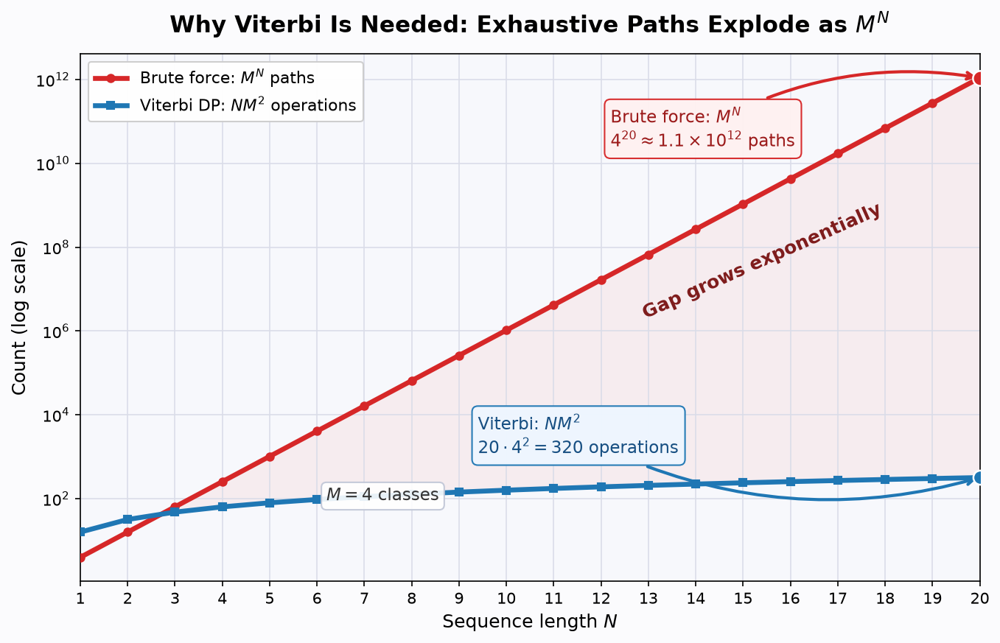
🤖 AI 生圖可用：重繪此示意圖的提示詞（結構化）
WHAT: 製作一張「序列貝氏分類為何需要 Viterbi」的教育示意圖。畫面以 M=4 個類別、序列長度 N=1 到 20 為例，比較窮舉所有類別路徑的 M^N 與 Viterbi 動態規劃的 N M^2。 WHY: 讓讀者即使遮住文字也能看出反直覺差異：只是把序列稍微拉長，窮舉路徑數就會指數爆炸；而 Viterbi 因為重用局部最優結果，計算量只隨 N 近似線性增加。 MUST show: 使用對數 y 軸的雙曲線圖；紅色陡升曲線標示 brute force = M^N；藍色低斜率曲線標示 Viterbi = N M^2；在 N=20, M=4 處標出 4^20 約 1.1e12 paths，並標出 Viterbi 只有 20*4^2=320 operations；用箭頭或陰影強調兩者差距隨 N 放大。 AVOID: 不要只畫方框或流程圖；不要用線性 y 軸把 Viterbi 壓到看不清；不要使用中文圖中文字；不要畫成抽象網路節點而看不出 M^N 與 N M^2 的量級差。
一句話
如果觀測是一串 $X:\boldsymbol{x}_1,\boldsymbol{x}_2,\ldots,\boldsymbol{x}_N$，那分類任務就變成：從所有可能的類別序列 $\Omega_i$ 中，找出最能解釋整串觀測 $X$ 的那一條。
是什麼
假設共有 $M$ 個類別 $\omega_i, i=1,2,\ldots,M$。對長度為 $N$ 的觀測序列 $X$，一個可能的類別序列可寫成：
$$ \Omega_i:\omega_{i_1},\omega_{i_2},\ldots,\omega_{i_N}, \quad i_k\in\{1,2,\ldots,M\} $$
意思是把 $\boldsymbol{x}_1$ 指派給 $\omega_{i_1}$、$\boldsymbol{x}_2$ 指派給 $\omega_{i_2}$，一路到 $\boldsymbol{x}_N$ 指派給 $\omega_{i_N}$。因為每個位置都有 $M$ 種選擇，全部可能的類別序列共有 $M^N$ 條。
Bayes 決策規則
原文把整串觀測 $X$ 看成一個延伸後的超級特徵向量，把每一條 $\Omega_i$ 看成一個超級類別。觀察到 $X$ 後，Bayes 規則選擇後驗機率最大的類別序列：
$$ \begin{equation*} P\left(\Omega_i \mid X\right)\gt P\left(\Omega_j \mid X\right), \quad \forall i \neq j \tag{9.1} \end{equation*} $$
用 Bayes rule 展開後，分母 $p(X)$ 對所有候選序列相同，所以等價於比較先驗乘上似然：
$$ \begin{equation*} P\left(\Omega_i\right) p\left(X \mid \Omega_i\right)\gt P\left(\Omega_j\right) p\left(X \mid \Omega_j\right), \quad \forall i \neq j \tag{9.2} \end{equation*} $$
為什麼要這樣
把整串觀測當成一個超級向量，最大的好處是概念上很乾淨：我們不用重新發明分類器，只是把「單點分類」換成「序列分類」。不過這也立刻帶來計算問題，因為候選答案從 $M$ 個類別變成 $M^N$ 條路徑。
怎麼用 / 怎麼記
流程可以記成三步：
- 列出觀測序列 $X$。
- 把每一種可能的標籤排列視為候選 $\Omega_i$。
- 選出讓 $P\left(\Omega_i\right)p\left(X\mid\Omega_i\right)$ 最大的序列。
接下來的第 9.3 節會替 $P\left(\Omega_i\right)$ 與 $p\left(X\mid\Omega_i\right)$ 加上馬可夫假設，讓這個看似龐大的序列分類問題變得有結構可用。
把整串觀測 $X:\boldsymbol{x}_1,\ldots,\boldsymbol{x}_N$ 視為一個超級特徵向量，候選類別序列 $\Omega_i$ 共有 $M^N$ 條（式 9.1–9.2）。窮舉必須對每一條路徑算似然，成本隨 $N$ 指數爆炸；Viterbi 動態規劃只對每個 $(k,i)$ 用前一步 $M$ 個狀態取最大，總成本 $N\cdot M^2$，隨 $N$ 近似線性。下圖以對數 y 軸呈現兩者差距。
若有 $M$ 個類別、觀測序列長度為 $N$，可能的類別序列數量是多少？
式 (9.2) 要比較的是哪一個量？
把整串 $X$ 視為延伸特徵向量的主要用意是什麼？
馬可夫鏈模型：一階相依假設
▼🤖 AI 生圖可用：重繪此示意圖的提示詞（結構化）
WHAT: 一階馬可夫鏈（First-Order Markov Chain）狀態轉移與時間展開概念圖。左側為 3 個狀態圓節點的轉移機率有向圖，右側為展開的時間序列鏈。 WHY: 解釋一階馬可夫假設的核心——「當前狀態只由前一步決定，給定前一步後，更早的歷史不再直接影響未來（無記憶性）」，說明序列機率如何被簡化為相鄰轉移的連乘。 MUST show: 1. 狀態空間有向圖：3 個狀態節點 ω1, ω2, ω3，節點間的有向轉移弧線與自轉環，標明出邊機率和為 1 的具體數值（如 0.7, 0.2, 0.1）。 2. 時間展開序列：橫向排列的時間步 ω(k-2) -> ω(k-1) -> ω(k) -> ω(k+1)。 3. 幾何因果對比：用加粗高亮的青綠箭頭強調 ω(k-1) 對 ω(k) 的直接決定關係；同時用帶紅色禁止符號/打叉的虛線弧線標示 ω(k-2) 到 ω(k) 的相依已被前一步阻斷。 4. 專業配色：Teal 主色調（#0d9488）、深青、灰色次要元素與紅色強調標記。 AVOID: 複雜的 LaTeX 數學公式（如 \sum 或偏微分）、凌亂交叉無標註的箭頭、未標明出邊機率或機率和不等於 1 的錯誤轉移、純方框文字圖。
一句話
一階馬可夫模型說：目前類別只需要看前一個類別，不必記住更早以前的全部歷史。這個假設讓類別序列的先驗機率可以拆成一連串轉移機率。
是什麼
若類別序列為 $\omega_{i_1},\omega_{i_2},\ldots$，一階馬可夫假設寫成：
$$ \begin{equation*} P\left(\omega_{i_k} \mid \omega_{i_{k-1}}, \omega_{i_{k-2}}, \ldots, \omega_{i_1}\right)=P\left(\omega_{i_k} \mid \omega_{i_{k-1}}\right) \tag{9.3} \end{equation*} $$
白話說，到了第 $k$ 階段，要判斷 $\boldsymbol{x}_k$ 屬於哪個類別，只讓它依賴第 $k-1$ 階段的類別。這不是說更早的資訊完全不重要，而是模型把更早資訊的影響濃縮在前一個類別狀態裡。
類別序列先驗怎麼拆
一般機率鏈鎖律可把 $P\left(\Omega_i\right)$ 展開成很多條件機率：
$$ \begin{aligned} P\left(\Omega_i\right) & \equiv P\left(\omega_{i_1}, \omega_{i_2}, \ldots, \omega_{i_N}\right) \\ & =P\left(\omega_{i_N} \mid \omega_{i_{N-1}}, \ldots, \omega_{i_1}\right) P\left(\omega_{i_{N-1}} \mid \omega_{i_{N-2}}, \ldots, \omega_{i_1}\right) \ldots P\left(\omega_{i_1}\right) \end{aligned} $$
套入一階馬可夫假設後，就得到原文式 (9.4)：
$$ \begin{equation*} P\left(\Omega_i\right)=P\left(\omega_{i_1}\right) \prod_{k=2}^{N} P\left(\omega_{i_k} \mid \omega_{i_{k-1}}\right) \tag{9.4} \end{equation*} $$
觀測似然怎麼拆
原文接著採用兩個常見假設：給定整條類別序列後，各觀測彼此統計獨立；而且每一類的機率密度只由自己的類別決定，不依賴其他類別。於是：
$$ \begin{equation*} p\left(X \mid \Omega_i\right)=\prod_{k=1}^{N} p\left(\boldsymbol{x}_k \mid \omega_{i_k}\right) \tag{9.5} \end{equation*} $$
把式 (9.4) 與 (9.5) 合起來，馬可夫模型下的 Bayes 目標就是最大化：
$$ \begin{equation*} p\left(X \mid \Omega_i\right) P\left(\Omega_i\right)=P\left(\omega_{i_1}\right) p\left(\boldsymbol{x}_1 \mid \omega_{i_1}\right) \prod_{k=2}^{N} P\left(\omega_{i_k} \mid \omega_{i_{k-1}}\right) p\left(\boldsymbol{x}_k \mid \omega_{i_k}\right) \tag{9.6} \end{equation*} $$
為什麼還不夠
式 (9.6) 已經很有結構：每一步只需要「前一類轉到目前類」的機率，以及「目前類產生目前觀測」的密度。但如果直接對所有 $M^N$ 條 $\Omega_i$ 都算一次，仍然要做約 $O\left(NM^N\right)$ 次乘法，長序列時會爆炸。
怎麼記
可把式 (9.6) 記成「起點先驗乘起點發射，之後每一步都是轉移乘發射」：
- 起點：$P\left(\omega_{i_1}\right)p\left(\boldsymbol{x}_1\mid\omega_{i_1}\right)$。
- 每一步：$P\left(\omega_{i_k}\mid\omega_{i_{k-1}}\right)p\left(\boldsymbol{x}_k\mid\omega_{i_k}\right)$。
- 整條路徑：把所有步驟連乘，選最大的那條。
一階馬可夫假設的核心敘述是什麼？
在式 (9.4) 中，$P\left(\Omega_i\right)$ 被拆成什麼形式？
式 (9.5) 使用了哪個觀測模型假設？
為什麼直接最大化式 (9.6) 仍然很昂貴？
Viterbi 演算法：動態規劃把 M^N 降到 NM²
▼🤖 AI 生圖可用：重繪此示意圖的提示詞（結構化）
WHAT: Viterbi 演算法在狀態網格（Trellis Diagram）上進行動態規劃（DP）搜尋概念圖。包含 4 個時間階段與 3 個狀態節點組成的網格、候選分支剪枝、各節點保留的最佳前驅指針，以及最終回溯出的全域最優路徑。 WHY: 直觀展示 Viterbi 演算法如何透過 Bellman 原理將序列分類的計算複雜度從指數級 M^N 降至多項式級 NM^2——即「每個階段、每個節點只保留一條最佳前驅並丟棄其餘」，最後從全域最大終點反向回溯出完整最優序列。 MUST show: 1. Trellis 網格結構：橫向 4 個階段（k=1..4），縱向 3 個狀態（ω1, ω2, ω3），共 12 個網格節點。 2. 剪枝對比（幾何核心）：相鄰欄間被淘汰的次優路徑使用淡灰色虛線，展現被丟棄的候選分支；各節點僅有一條實線前驅指針。 3. 全域最優路徑高亮：用醒目的粗紅實線與高亮外框節點標示貫穿整個網格的最佳序列。 4. 回溯機制（Traceback）：終點處標示最大累積得分節點，並有反向回溯指針說明。 5. 清楚的圖例與步驟標註（前向遞迴保留最佳 vs. 後向回溯）。 AVOID: 包含繁複的動態規劃數學公式、純文字表格、所有線條粗細相同無主次的蜘蛛網圖、缺少回溯方向指引。
一句話
Viterbi 演算法把「找整條最佳類別序列」改成「每個階段、每個類別只保留目前最佳前驅」，因此不用列舉 $M^N$ 條完整路徑，而能用約 $NM^2$ 的工作量完成。
是什麼
想像一個 trellis 網格：每一欄代表一個觀測 $\boldsymbol{x}_k$，每一欄有 $M$ 個節點，分別對應 $\omega_1,\omega_2,\ldots,\omega_M$。從前一欄的某類別走到下一欄的某類別，就是一個類別轉移；一整條路徑就代表一整串類別序列 $\Omega_i$。
在馬可夫模型中，從 $\omega_{i_{k-1}}$ 轉到 $\omega_{i_k}$ 且看到 $\boldsymbol{x}_k$ 的乘法成本定義為：
$$ \begin{equation*} \hat{d}\left(\omega_{i_k}, \omega_{i_{k-1}}\right)=P\left(\omega_{i_k} \mid \omega_{i_{k-1}}\right) p\left(\boldsymbol{x}_k \mid \omega_{i_k}\right) \tag{9.7} \end{equation*} $$
第一步沒有真正的前一個類別，因此初始化為：
$$ \hat{d}\left(\omega_{i_1}, \omega_{i_0}\right)=P\left(\omega_{i_1}\right) p\left(\boldsymbol{x}_1 \mid \omega_{i_1}\right) $$
整條路徑要最大化的乘法成本是：
$$ \begin{equation*} \hat{D} \equiv \prod_{k=1}^{N} \hat{d}\left(\omega_{i_k}, \omega_{i_{k-1}}\right) \tag{9.8} \end{equation*} $$
為什麼取 log
連乘很多機率容易變成很小的數，也不方便做遞迴相加。因此原文改最大化 log 成本：
$$ \begin{align*} \ln (\hat{D}) & =\sum_{k=1}^{N} \ln \hat{d}\left(\omega_{i_k}, \omega_{i_{k-1}}\right) \\ & \equiv \sum_{k=1}^{N} d\left(\omega_{i_k}, \omega_{i_{k-1}}\right) \equiv D \tag{9.9} \end{align*} $$
其中 $d(\cdot,\cdot)\equiv \ln \hat{d}(\cdot,\cdot)$。取 log 不會改變最大者，因為 $\ln$ 是單調遞增函數；它只是把乘法變成加法。
Bellman 遞迴
對一條路徑 $i$，到達第 $k$ 階段類別 $\omega_{i_k}$ 的累積成本定義為：
$$ \begin{equation*} D\left(\omega_{i_k}\right)=\sum_{r=1}^{k} d\left(\omega_{i_r}, \omega_{i_{r-1}}\right) \tag{9.10} \end{equation*} $$
Bellman 原理告訴我們：若要到達目前節點，只需要比較所有可能前驅的「前驅最佳成本加上這一步成本」，取最大者即可：
$$ \begin{equation*} D_{\max }\left(\omega_{i_k}\right)=\max _{i_{k-1}}\left[D_{\max }\left(\omega_{i_{k-1}}\right)+d\left(\omega_{i_k}, \omega_{i_{k-1}}\right)\right], \quad i_k, i_{k-1}=1,2, \ldots, M \tag{9.11} \end{equation*} $$
初始條件為：
$$ \begin{equation*} D_{\max }\left(\omega_{i_0}\right)=0 \tag{9.12} \end{equation*} $$
最後在第 $N$ 階段選累積成本最大的終點：
$$ \begin{equation*} \omega_{i_N}^{*}=\arg \max _{\omega_{i_N}} D_{\max }\left(\omega_{i_N}\right) \tag{9.13} \end{equation*} $$
怎麼用 / 怎麼記
Viterbi 的操作口訣是「每格比前驅，只留勝出線」。
- 在每個階段 $k$，對每個目前類別 $\omega_{i_k}$，檢查所有 $M$ 個前驅類別。
- 用式 (9.11) 算出到達該類別的最佳累積成本。
- 記下造成最大值的前驅，其他路徑丟掉。
- 到最後一欄後，用式 (9.13) 選最佳終點，再沿記錄的前驅回溯整條路徑。
因為每一欄有 $M$ 個節點，每個節點比較 $M$ 個前驅，所以每階段約 $M^2$ 次比較；總共 $N$ 階段就是 $NM^2$。這就是它比暴力列舉 $NM^N$ 有效率的原因。
一點延伸
原文也提醒，雖然這裡從 Bayes 與機率密度推導 Viterbi，但實務上也可以換成其他轉移成本 $d\left(\omega_{i_k},\omega_{i_{k-1}}\right)$。只要問題仍有「最佳子結構」，動態規劃的精神就能繼續使用。
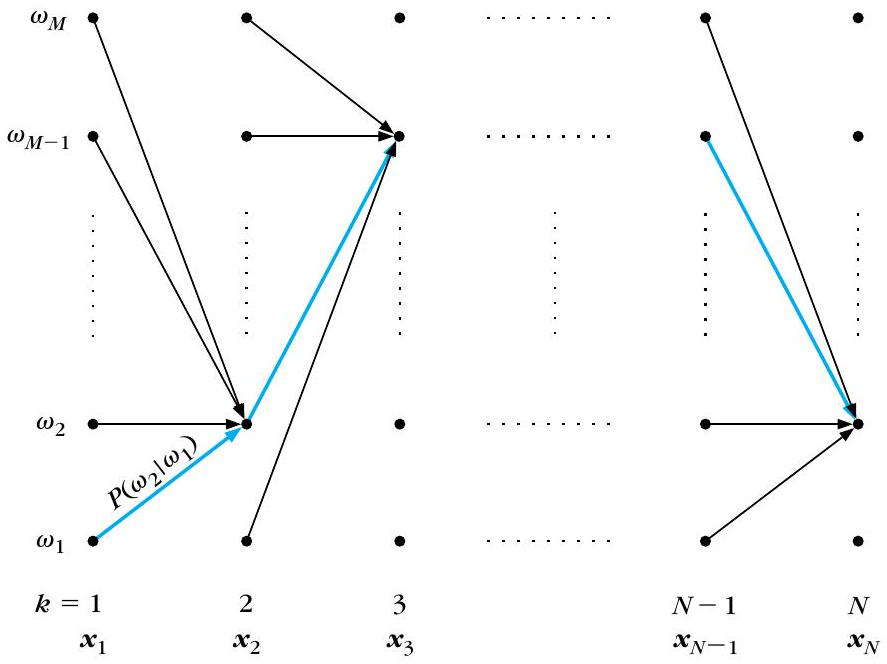
Viterbi 演算法在每個節點保留的是什麼？
為什麼原文從 $\hat{D}$ 改成最大化 $D=\ln(\hat{D})$？
Viterbi 將暴力搜尋約 $NM^N$ 的工作量降到多少？
式 (9.13) 的角色是什麼？
Viterbi 手算實例（Example 9.1）：三類四階段的最佳路徑回溯
▼一句話
Example 9.1 示範：已知第 $k=3$ 階段三個節點的最佳累積成本後，收到 $x_4=1.2$ 時，如何用 Viterbi 遞迴更新第 $k=4$ 階段的三個節點，最後回溯出整條最佳路徑。
已知條件
這個例子有三個類別 $\omega_1,\omega_2,\omega_3$，觀測在一維空間中。已知第 $k=3$ 階段到達三個類別的最佳成本為：
$$ \begin{equation*} D\left(\omega_1\right)=-0.5, \quad D\left(\omega_2\right)=-0.6, \quad D\left(\omega_3\right)=-0.2 \tag{9.14} \end{equation*} $$
Table 9.1 給的是從前一階段 $\omega_{i_{k-1}}$ 轉到目前階段 $\omega_{i_k}$ 的轉移機率：
| 前一類別 | 到 $\omega_1$ | 到 $\omega_2$ | 到 $\omega_3$ |
|---|---|---|---|
| $\omega_1$ | 0.1 | 0.7 | 0.2 |
| $\omega_2$ | 0.4 | 0.3 | 0.3 |
| $\omega_3$ | 0.3 | 0.1 | 0.6 |
觀測模型為 Gaussian：
$$ p\left(x \mid \omega_i\right)=\frac{1}{\sqrt{2 \pi} \sigma_i} \exp \left(-\frac{\left(x-\mu_i\right)^2}{2 \sigma_i^2}\right) $$
參數為 $\mu_1=1.0,\sigma_1^2=0.03$；$\mu_2=1.5,\sigma_2^2=0.02$；$\mu_3=0.5,\sigma_3^2=0.01$。對 $x_4=1.2$，原文給出三個 log likelihood：
- $\ln p\left(x_4=1.2\mid\omega_1\right)=-0.1578$。
- $\ln p\left(x_4=1.2\mid\omega_2\right)=-0.2591$。
- $\ln p\left(x_4=1.2\mid\omega_3\right)=-2.2176$。
更新到 $\omega_1$
到達目前節點 $\omega_1$ 時，要比較三個前驅：
- 從 $\omega_1$ 來：$-0.5+\ln(0.1)-0.1578=-2.9604$。
- 從 $\omega_2$ 來：$-0.6+\ln(0.4)-0.1578=-1.6741$。
- 從 $\omega_3$ 來：$-0.2+\ln(0.3)-0.1578=-1.5617$。
最大的是 $-1.5617$，所以第 $k=4$ 階段到達 $\omega_1$ 的最佳前驅是第 $k=3$ 階段的 $\omega_3$。
更新到 $\omega_2$
到達目前節點 $\omega_2$ 時，使用 $\ln p\left(x_4=1.2\mid\omega_2\right)=-0.2591$：
- 從 $\omega_1$ 來：$-0.5+\ln(0.7)-0.2591=-1.1158$。
- 從 $\omega_2$ 來：$-0.6+\ln(0.3)-0.2591=-2.0631$。
- 從 $\omega_3$ 來：$-0.2+\ln(0.1)-0.2591=-2.7617$。
最大的是 $-1.1158$，所以到達 $\omega_2$ 的最佳前驅是 $\omega_1$。這個值也會成為最後整體最佳路徑成本。
更新到 $\omega_3$
到達目前節點 $\omega_3$ 時，使用 $\ln p\left(x_4=1.2\mid\omega_3\right)=-2.2176$：
- 從 $\omega_1$ 來：$-0.5+\ln(0.2)-2.2176=-4.3271$。
- 從 $\omega_2$ 來：$-0.6+\ln(0.3)-2.2176=-4.0216$。
- 從 $\omega_3$ 來：$-0.2+\ln(0.6)-2.2176=-2.9285$。
最大的是 $-2.9285$，所以到達 $\omega_3$ 的最佳前驅是 $\omega_3$ 自己，也就是 self-transition。
最後選終點與回溯
第 $k=4$ 階段三個終點的最佳成本為：
- 終點 $\omega_1$：$-1.5617$，前驅 $\omega_3$。
- 終點 $\omega_2$：$-1.1158$，前驅 $\omega_1$。
- 終點 $\omega_3$：$-2.9285$，前驅 $\omega_3$。
最大值是 $-1.1158$，因此如果 $k=4$ 是最後階段，最佳路徑終點為 $\omega_2$。依照原文圖中的最佳前驅一路回溯，得到：
$$ x_4\to\omega_2,\quad x_3\to\omega_1,\quad x_2\to\omega_2,\quad x_1\to\omega_1,\quad x_0\to\omega_2 $$
怎麼記
這個例子的精神是「每個終點各辦一場前驅選拔」。三個終點各自選出最佳前驅後，再從最後一欄挑最大成本當總冠軍，最後反向追蹤冠軍路徑。注意這裡的成本是 log 機率加總，所以值常是負的；比較時仍然是選數值較大的那個，例如 $-1.1158$ 大於 $-1.5617$。
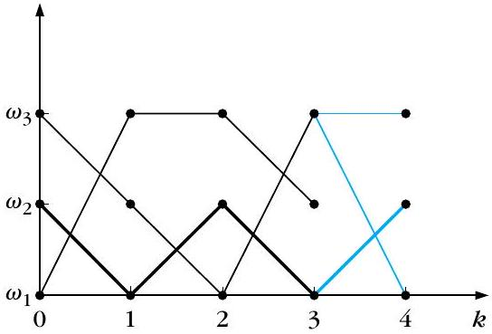
| D(ωᵢ) at k=3 | ω₁=-0.5000 | ω₂=-0.6000 | ω₃=-0.2000 |
|---|
| Table 9.1 | →ω₁ | →ω₂ | →ω₃ |
|---|---|---|---|
| ω₁→ | 0.1 | 0.7 | 0.2 |
| ω₂→ | 0.4 | 0.3 | 0.3 |
| ω₃→ | 0.3 | 0.1 | 0.6 |
| ln p(x₄|ωᵢ) | ω₁: -0.1578 | ω₂: -0.2591 | ω₃: -2.2176 |
|---|
Example 9.1 中，到達第 $k=4$ 階段的 $\omega_1$ 時，最佳前驅是哪一個類別？
Example 9.1 中，到達第 $k=4$ 階段的 $\omega_2$ 時，最大成本是多少？
若 $k=4$ 是最後階段，Example 9.1 的最佳終點與總成本為何？
依原文回溯結果，最佳路徑對 $x_4,x_3,x_2,x_1,x_0$ 的類別指派依序為何？
通道等化（一）：ISI、群集與情境相依分類
▼一句話
通道等化（Channel Equalization）是在訊號受傳輸通道與雜訊破壞後還原發送位元 $I_k$ 的技術；因符號間干擾（ISI）使連續接收樣本聚集為 $2^{n+l-1}$ 個幾何群集，且位元相依性限制了群集間的合法轉移，使等化問題自然轉化為情境相依分類與 Viterbi 路徑搜尋。
是什麼
在數位通訊傳輸中，發送端送出一串二進位資訊位元序列 $I_k \in \{0, 1\}$。當訊號通過實體傳輸通道（如無線電波、雙絞線）並疊加雜訊後，接收端在時刻 $k$ 接收到的取樣訊號可表示為：
$$ \begin{equation*} x_k = f(I_k, I_{k-1}, \ldots, I_{k-n+1}) + \eta_k \tag{9.15} \end{equation*} $$
其中 $f(\cdot)$ 代表通道響應，$\eta_k$ 為雜訊序列。通道效應會跨越過去 $n$ 個連續發送位元，這種現象稱為符號間干擾（Intersymbol Interference, ISI）。等化器的任務是作為逆向系統，依據連續接收到的 $l$ 個取樣值組成的觀測向量 $\boldsymbol{x}_k = [x_k, x_{k-1}, \ldots, x_{k-l+1}]^T$，做出對發送位元的最佳估計 $\hat{I}_k$（或考慮延遲 $r$ 估計 $I_{k-r}$）。
線性通道範例與 8 個群集
考慮一個經典線性通道範例（式 9.16）：
$$ \begin{equation*} x_k = 0.5 I_k + I_{k-1} + \eta_k \tag{9.16} \end{equation*} $$
此通道跨越 $n=2$ 個位元。若等化器取 $l=2$ 個連續取樣組成二維觀測向量 $\boldsymbol{x}_k = [x_k, x_{k-1}]^T$，由方程式可知 $\boldsymbol{x}_k$ 實際上取決於連續 3 個位元 $(I_k, I_{k-1}, I_{k-2})$。
在二進位序列下，三位元共有 $2^{n+l-1} = 2^{2+2-1} = 2^3 = 8$ 種組合。忽略雜訊時，各組合在二維平面 $(x_k, x_{k-1})$ 形成 8 個無雜訊中心點；考慮雜訊後，接收到的觀測向量會聚集在這 8 個中心周圍，形成 8 個群集 $\omega_1, \ldots, \omega_8$（Table 9.2）：
- $(I_k, I_{k-1}, I_{k-2}) = (0,0,0) \to (x_k, x_{k-1}) = (0, 0) \to \omega_1$（類別 B: $I_k=0$）
- $(I_k, I_{k-1}, I_{k-2}) = (0,0,1) \to (x_k, x_{k-1}) = (0, 1) \to \omega_2$（類別 B: $I_k=0$）
- $(I_k, I_{k-1}, I_{k-2}) = (0,1,0) \to (x_k, x_{k-1}) = (1, 0.5) \to \omega_3$（類別 B: $I_k=0$）
- $(I_k, I_{k-1}, I_{k-2}) = (0,1,1) \to (x_k, x_{k-1}) = (1, 1.5) \to \omega_4$（類別 B: $I_k=0$）
- $(I_k, I_{k-1}, I_{k-2}) = (1,0,0) \to (x_k, x_{k-1}) = (0.5, 0) \to \omega_5$（類別 A: $I_k=1$）
- $(I_k, I_{k-1}, I_{k-2}) = (1,0,1) \to (x_k, x_{k-1}) = (0.5, 1) \to \omega_6$（類別 A: $I_k=1$）
- $(I_k, I_{k-1}, I_{k-2}) = (1,1,0) \to (x_k, x_{k-1}) = (1.5, 0.5) \to \omega_7$（類別 A: $I_k=1$）
- $(I_k, I_{k-1}, I_{k-2}) = (1,1,1) \to (x_k, x_{k-1}) = (1.5, 1.5) \to \omega_8$（類別 A: $I_k=1$）
將 $\boldsymbol{x}_k$ 分類為 $I_k=1$（類別 A，即群集 $\omega_5 \sim \omega_8$ 的聯集）或 $I_k=0$（類別 B，即群集 $\omega_1 \sim \omega_4$ 的聯集），本質上就是將觀測指派給對應群集的分類問題。
合法轉移約束與轉移機率
為什麼通道等化屬於「情境相依分類」？因為受滑動視窗影響，連續時刻的群集轉移受到嚴格限制！
例如時刻 $k$ 的位元為 $(I_k, I_{k-1}, I_{k-2}) = (0, 0, 1) \in \omega_2$，到了下一時刻 $k+1$，新的三元組 $(I_{k+1}, I_k, I_{k-1})$ 前兩位元必定繼承原先的 $(I_k, I_{k-1}) = (0, 0)$。由於新發送的 $I_{k+1}$ 只能是 $1$ 或 $0$，故下一時刻只能轉移到 $(1, 0, 0) \in \omega_5$ 或 $(0, 0, 0) \in \omega_1$，其他 6 個轉移皆不合法（機率為 0）。
在發送位元等機率（0.5）的假設下，所有合法轉移的轉移機率皆為 $0.5$：
$$ P(\omega_1 \mid \omega_1) = 0.5 = P(\omega_5 \mid \omega_1) $$
其餘非合法轉移的機率皆為 0。
轉移代價函數（Cost Function）
給定 $N$ 個觀測向量 $\boldsymbol{x}_1, \ldots, \boldsymbol{x}_N$，等化目標是找出總代價最小的合法群集序列。在 Viterbi 演算法中，合法轉移的分支代價 $d(\omega_{i_k}, \omega_{i_{k-1}})$ 定義為觀測向量與群集代表中心的距離（式 9.17）：
$$ \begin{equation*} d(\omega_{i_k}, \omega_{i_{k-1}}) = d_{\omega_{i_k}}(\boldsymbol{x}_k) \tag{9.17} \end{equation*} $$
常見距離度量包含：
- 歐幾里得距離（Euclidean Distance）（式 9.18）： $$ \begin{equation*} d_{\omega_{i_k}}(\boldsymbol{x}_k) = \Vert \boldsymbol{x}_k - \boldsymbol{\mu}_{i_k} \Vert \tag{9.18} \end{equation*} $$
- 馬氏距離（Mahalanobis Distance）（式 9.19）： $$ \begin{equation*} d_{\omega_{i_k}}(\boldsymbol{x}_k) = \left( (\boldsymbol{x}_k - \boldsymbol{\mu}_{i_k})^T \Sigma_{i_k}^{-1} (\boldsymbol{x}_k - \boldsymbol{\mu}_{i_k}) \right)^{1/2} \tag{9.19} \end{equation*} $$ 其中群集代表中心 $\boldsymbol{\mu}_i$ 與協方差矩陣 $\Sigma_i$ 可在訓練期間透過發送已知位元序列進行統計平均習得。
- 高斯對數似然純量代價（式 9.20，若考慮 $l=1$ 且雜訊為獨立高斯）： $$ \begin{equation*} d(\omega_{i_k}, \omega_{i_{k-1}}) = \ln p(x_k \mid \omega_{i_k}) \equiv \ln(p(\eta_k)) = -(x_k - \hat{f}(I_k, \ldots, I_{k-n+1}))^2 \tag{9.20} \end{equation*} $$
為什麼／反直覺處
- 單點最近鄰決策的盲點： 若單獨拿每個 $\boldsymbol{x}_k$ 與 8 個中心算歐氏距離（決策導向模式），雖然簡單，但完全無視了「前後位元相互牽連」的合法轉移限制，遇到嚴重雜訊時極易誤判。結合轉移約束的 Viterbi 路徑搜尋能大幅降低位元錯誤率（BER）。
- 群集法 vs 模型估計法： 當傳輸環境存在同通道干擾（Cochannel Interference，非白雜訊）或高度非線性通道時，要準確估計通道方程式 $\hat{f}$ 極為困難，式 (9.20) 的高斯假定也會失效；而基於幾何群集中心與協方差矩陣的方法無需估計通道參數，展現出極佳的強健性（Robustness）。
怎麼算 / 怎麼記
- 群集數量計算公式： 二進位序列下總群集數為 $m = 2^{n+l-1}$（$n$ 為通道記憶長度，$l$ 為等化器觀測長度）。
- 口訣：「通道記憶生干擾，連續取樣成群集；滑動位元鎖轉移，Viterbi 全域找最低」。
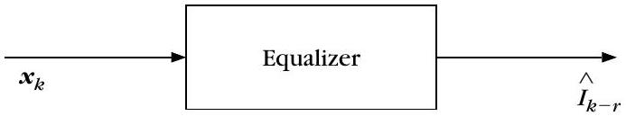
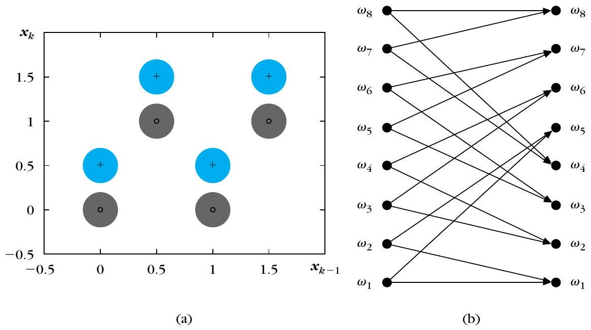
在二進位傳輸中，若線性通道跨越 $n=2$ 個位元，等化器使用 $l=2$ 個連續接收樣本組成觀測向量 $\boldsymbol{x}_k = [x_k, x_{k-1}]^T$，則無雜訊情況下總共會形成多少個可能群集？
針對線性通道 $x_k = 0.5 I_k + I_{k-1} + \eta_k$，若時刻 $k$ 的發送位元為 $(I_k, I_{k-1}, I_{k-2}) = (0, 0, 1)$（對應群集 $\omega_2$），則下一時刻 $k+1$ 的合法轉移群集為何？
關於通道等化中基於群集（Clustering-based）的代價函數，下列敘述何者最正確？
通道等化（二）：狀態、狀態網格與有限狀態機
▼一句話
雖然 $2^{n+l-1}$ 個群集能建構網格圖，但群集轉移本質上僅由最近的 $n+l-2$ 個位元決定，成對群集跳向相同目標；將位元對定義為「狀態」可將 8 群集簡化為 4 狀態有限狀態機（FSM），使 Viterbi 狀態網格規模減半、大幅降低計算量。
是什麼
在 KP-6 中，我們針對 8 個群集建立了轉移關係與網格圖（Trellis Diagram），並以 Viterbi 演算法搜尋最佳路徑。然而從計算效率的角度來看，直接在群集網格上搜尋並非最佳做法。
群集網格的計算冗餘
仔細觀察群集轉移圖（Figure 9.4b），會發現成對的群集在轉移時會跳到完全相同的目標群集：
- 從 $\omega_1 (0,0,0)$ 與 $\omega_2 (0,0,1)$ 出發，下一時刻的合法群集皆為 $\omega_1$ 或 $\omega_5$。
- 從 $\omega_3 (0,1,0)$ 與 $\omega_4 (0,1,1)$ 出發，下一時刻的合法群集皆為 $\omega_2$ 或 $\omega_6$。
- 從 $\omega_5 (1,0,0)$ 與 $\omega_6 (1,0,1)$ 出發，下一時刻的合法群集皆為 $\omega_1$ 或 $\omega_5$。
- 從 $\omega_7 (1,1,0)$ 與 $\omega_8 (1,1,1)$ 出發，下一時刻的合法群集皆為 $\omega_2$ 或 $\omega_6$。
原因：合法轉移方向完全由最近的 $n+l-2$ 個位元決定。在 $n=2, l=2$ 的範例中，$n+l-2 = 2$，即轉移完全由位元對 $(I_k, I_{k-1})$ 決定，與最舊的位元 $I_{k-2}$ 是 0 還是 1 完全無關！
狀態（State）與有限狀態機（FSM）
既然轉移由最近的位元對決定，我們便可將時刻 $k$ 的位元對定義為系統的狀態（State）：
$$ s_k = (I_k, I_{k-1}) $$
對於二進位傳輸，狀態總數為 $2^{n+l-2} = 2^2 = 4$ 個狀態：
- $s_1: (0, 0)$
- $s_2: (0, 1)$
- $s_3: (1, 0)$
- $s_4: (1, 1)$
給定時刻 $k$ 的狀態 $(I_k, I_{k-1})$ 以及時刻 $k+1$ 新發送的位元 $I_{k+1}$，下一時刻的狀態便唯一確定為 $(I_{k+1}, I_k)$。這正是標準的有限狀態機（Finite State Machine, FSM）！
狀態轉移與群集代價的對應
狀態網格（State Trellis）與群集之間有著緊密的對應關係：
- 一條狀態轉移路徑 $(I_k, I_{k-1}) \to (I_{k+1}, I_k)$ 標記了當前新發送位元 $I_{k+1}$。
- 該轉移所涉及的三個位元 $(I_{k+1}, I_k, I_{k-1})$ 唯一對應到 8 個群集中的某一個 $\omega_i$。
- 因此，該狀態轉移分支的代價直接由對應群集的幾何距離代價（如歐氏距離式 9.18 或馬氏距離式 9.19）提供。
在狀態網格上執行 Viterbi 演算法，最佳路徑上的分支位元標記即為發送位元序列的最佳估計值 $\hat{I}_k$。
一維取樣與對稱性加速技巧
在實際系統中，還可進一步利用以下特性加速運算：
- 一維取樣（$l=1$）： 直接以純量取樣 $x_k$ 進行等化，狀態數進一步降為 $2^{n-1} = 2$ 個狀態。雖然一維空間中不同標籤的群集重疊機率較高，但 Viterbi 演算法能藉由路徑的時序歷史資訊正確解碼。
- 群集算術對稱性： 在訓練階段無需直接統計全部 $2^n$ 個群集中心；利用通道響應的線性與符號對稱性，只需學習其中 $n$ 個群集中心，其餘群集中心可直接由簡單的加減算術運算得出，大幅縮短訓練序列長度與計算時間。
為什麼／反直覺處
- 節點規模減半，效率倍增： 群集網格每步需維護 8 個節點的存活路徑，而狀態網格只需維護 4 個節點。動態規劃的加法、比較與選擇（ACS）運算量直接減半，記憶體佔用亦大幅降低。
- 狀態是系統內部的記憶： 狀態並不是儀器直接量測到的數值，而是通道記憶體（暫存器）內部的位元組合。這種「內部狀態推動外部觀測」的視角，正是理解隱藏馬可夫模型（HMM）的核心基礎。
怎麼算 / 怎麼記
- 4 狀態轉移速查：
- $s_1(0,0) \xrightarrow{I=0} s_1(0,0)$（對應 $(0,0,0) \to \omega_1$）；$\xrightarrow{I=1} s_3(1,0)$（對應 $(1,0,0) \to \omega_5$）
- $s_2(0,1) \xrightarrow{I=0} s_1(0,0)$（對應 $(0,0,1) \to \omega_2$）；$\xrightarrow{I=1} s_3(1,0)$（對應 $(1,0,1) \to \omega_6$）
- $s_3(1,0) \xrightarrow{I=0} s_2(0,1)$（對應 $(0,1,0) \to \omega_3$）；$\xrightarrow{I=1} s_4(1,1)$（對應 $(1,1,0) \to \omega_7$）
- $s_4(1,1) \xrightarrow{I=0} s_2(0,1)$（對應 $(0,1,1) \to \omega_4$）；$\xrightarrow{I=1} s_4(1,1)$（對應 $(1,1,1) \to \omega_8$）
- 口訣：「群集八個成對走，狀態四個就足夠；轉移邊上定代價，網格減半速加倍」。
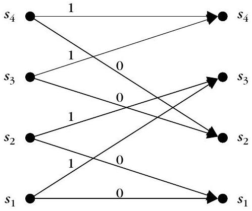
在二維等化器範例（$n=2, l=2$）中，為什麼能將 8 個群集的網格簡化為 4 個狀態的網格？
若當前系統處於狀態 $s_2: (0, 1)$，當新傳送位元為 $I_{k+1} = 1$ 時，下一狀態為何？且該轉移對應哪一個群集的代價？
關於通道等化中的降維與加速技巧，下列敘述何者錯誤？
隱藏馬可夫模型的直覺：布幕後的擲硬幣
▼🤖 AI 生圖可用：重繪此示意圖的提示詞（結構化）
WHAT: 隱藏馬可夫模型（HMM）生成過程概念圖——「布幕後擲硬幣」物理隱喻。上半部為布幕後看不見的硬幣狀態切換序列，中間為分割視野的布幕屏障，下半部為布幕前可直接觀測到的硬幣正反面（H/T）發射序列。 WHY: 建立 HMM 的核心直覺——系統由「隱藏的內部狀態轉移」與「外部可觀測的隨機發射」這兩個相互耦合的隨機過程構成；我們只能看見發射出的觀測結果，必須藉由機率模型推斷布幕後看不到的內部真實狀態。 MUST show: 1. 上下分層空間與布幕屏障：明確劃分「布幕後（隱藏層）」與「布幕前（可見層）」，中間繪製象徵阻隔視野的簾幕或邊界線。 2. 隱藏狀態序列（水平因果）：布幕後展開的狀態節點（如 S1, S2），帶有問號或虛線效果，節點間有水平狀態轉移箭頭。 3. 可觀測輸出序列（垂直因果）：布幕前清晰可見的一排硬幣正面與反面結果（H, H, T, H）。 4. 垂直發射箭頭（Emission）：從隱藏狀態穿透布幕垂直指向可觀測硬幣，標註發射過程。 5. 雙重隨機過程說明：水平轉移（狀態如何隨機跳轉）vs 垂直發射（當前狀態如何吐出觀測）。 AVOID: 複雜繁冗的 Forward-Backward 數學積分公式、沒有布幕屏障導致隱藏與可見混淆、純文字條列無空間層次。
一句話
當系統內部狀態無法直接被雙眼看見、只能觀察到由各狀態隨機發射的輸出時，即為隱藏馬可夫模型（HMM）；正如布幕後擲硬幣，我們看到正面或反面，卻不知道是哪一枚硬幣所擲，其本質是統計特性隨離散狀態隨機切換的分段平穩隨機過程。
是什麼
在前面的通道等化問題中，馬可夫鏈的狀態是可直接觀察的（Observable States）——只要已知發送的位元序列，我們就能明確知道觀測向量 $\boldsymbol{x}_k$ 屬於哪一個狀態或群集。
然而在許多真實世界的應用中，系統內部的狀態無法被直接觀測。我們只能看到狀態所發射（Emit）出來的觀測結果；更重要的是，系統在不同狀態之間的跳轉本身也是一個隨機過程。這類模型稱為隱藏馬可夫模型（Hidden Markov Model, HMM）。
布幕後擲硬幣的三大實驗
為了建立 HMM 的物理直覺，課本引入了經典的「布幕後擲硬幣」實驗：實驗者在布幕後擲硬幣，只向我們展示擲出的結果（正面 Head $H$ 或反面 Tail $T$），我們看不到布幕後的動作。
- 單枚硬幣實驗（狀態可觀察，Figure 9.6a）：
- 布幕後只有 1 枚硬幣。輸出序列為一連串隨機的 $H$ 與 $T$。
- 此時狀態直接與觀測結果重合（狀態 1 = $H$，狀態 2 = $T$），狀態是可觀察的。
- 獨立參數個數：1 個（即正面機率 $P(H)$；反面機率為 $P(T) = 1 - P(H)$；轉移機率 $P(1 \mid 1) = P(H), P(2 \mid 1) = 1 - P(H)$ 皆由 $P(H)$ 唯一確定）。
- 兩枚硬幣實驗（隱藏狀態，Figure 9.6b）：
- 布幕後有硬幣 1（狀態 1）與硬幣 2（狀態 2），兩枚硬幣擲出正面的機率分別為 $P_1(H)$ 與 $P_2(H)$。
- 實驗者每次依轉移機率 $P(i \mid j)$ 決定切換或保留硬幣，擲出後展示 $H$ 或 $T$。我們看到 $H$，卻不知道是哪一枚硬幣擲出的！這就是「隱藏狀態」。
- 獨立參數個數：4 個
- 發射參數：$P_1(H), P_2(H)$（共 2 個）。
- 轉移參數：$P(i \mid j)$ 共有 $2 \times 2 = 4$ 個，但因機率和為 1（$P(1 \mid j) + P(2 \mid j) = 1, j=1,2$），獨立參數為 2 個（如自轉移 $P(1 \mid 1), P(2 \mid 2)$）。
- 總計：$2 + 2 = 4$ 個獨立參數。
- 三枚硬幣實驗（隱藏狀態，Figure 9.7）：
- 布幕後有 3 枚硬幣（狀態 1, 2, 3）。
- 獨立參數個數：9 個
- 發射參數：$P_1(H), P_2(H), P_3(H)$（共 3 個）。
- 轉移參數：$3 \times 3 = 9$ 個轉移機率，受 3 個約束 $\sum_{i=1}^3 P(i \mid j) = 1 \,(j=1,2,3)$，剩下 $9 - 3 = 6$ 個獨立轉移參數。
- 總計：$3 + 6 = 9$ 個獨立參數。
HMM 的本質：分段平穩隨機過程
在巨觀上，許多物理訊號是非平穩的（Nonstationary），其統計特徵隨時間劇烈變化；但在微觀上，訊號可在一段時間內維持某種平穩統計特性，並在數個平穩過程之間隨機切換。HMM 正是替這種分段平穩隨機過程（Piecewise Stationary Process）建模的強大工具：
- 語音辨識（Speech Recognition）： 一個詞彙（Utterance）由多個音素（Phonemes）組成。發母音（Vowels）與子音（Consonants）時語音訊號呈現截然不同的統計特性，詞彙發音即為在各音素統計狀態間的隨機轉移。
- 手寫字辨識（Handwriting Recognition）： 文字筆畫由直線段、圓弧段等基本幾何狀態序列組合而成。
- 其他應用： 影像紋理分類、盲通道等化（Blind Equalization）、音樂訊號樣式辨識等。
為什麼／反直覺處
- 反直覺處：觀測不等於狀態！ 在 HMM 中，看到「正面 $H$」並不等於處於「狀態 1」，因為硬幣 1 與硬幣 2 都有可能擲出正面！同一觀測值可以由多個不同的內部狀態以不同機率發射出來，觀測與狀態之間是一對多的機率關聯。
- 模型選擇（Model Order）的關鍵性： 若底層資料是由 2 枚硬幣產生的，我們卻錯誤採用了 3 枚硬幣的模型，過多的自由參數會造成過度擬合與參數估計品質低落；因此選擇合適的狀態數量對 HMM 建模成敗至關重要。
怎麼算 / 怎麼記
- 二元觀測 HMM 核心參數計算： $K$ 狀態系統下，獨立發射參數 $K$ 個，獨立轉移參數 $K(K-1)$ 個，合計核心參數總數為 $K + K(K-1) = K^2$（$K=1 \to 1$；$K=2 \to 4$；$K=3 \to 9$）。
- 口訣：「布幕之後擲硬幣，見正見反不知幣；狀態跳轉隱於內，分段平穩兩層機」。
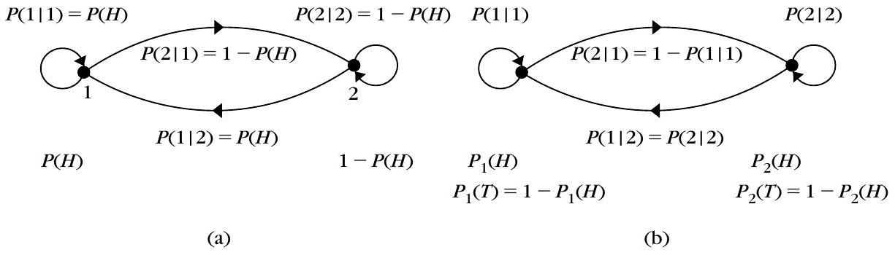
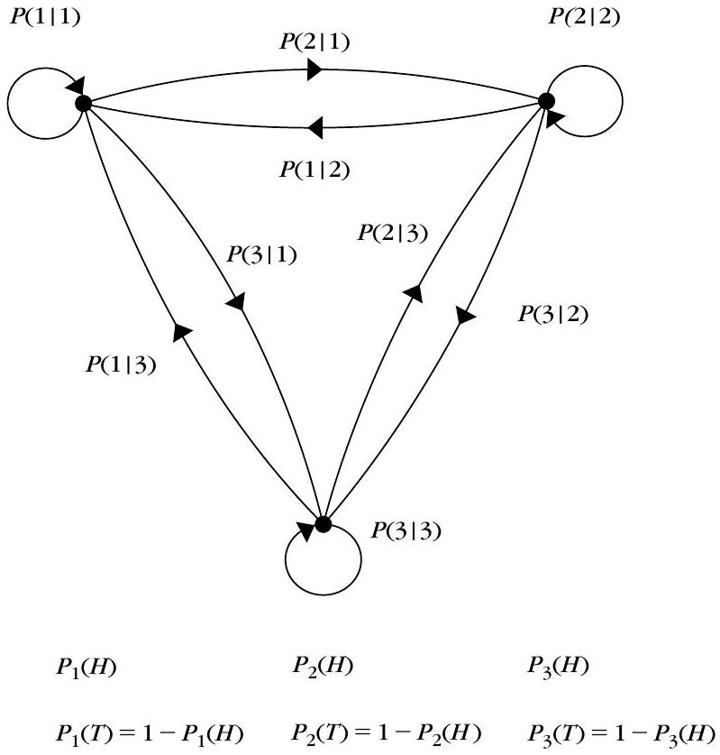
布幕後有 $K$ 枚偏差不同的硬幣當作隱藏狀態，每次只擲一枚；我們看不到是哪一枚，只看到 $H/T$ 觀測。模型參數為發射機率 $P_i(H)$ 與轉移機率 $P(i\mid j)$（每列和為 1）。按「生成」可抽樣一條隱藏狀態序列與對應觀測序列，體會「狀態隱藏、只見觀測」。
在布幕後擲硬幣的兩枚硬幣 HMM 實驗中（Figure 9.6b），為什麼狀態被稱為「隱藏狀態（Hidden State）」？
對於包含 3 個隱藏狀態且每次輸出為正面或反面（二元觀測）的硬幣 HMM（Figure 9.7），在不考慮初始狀態機率的情況下，總共需要多少個獨立參數來描述該隨機過程？
關於隱藏馬可夫模型（HMM）的適用場景與特性，下列敘述何者最正確？
HMM 的正式定義：狀態、轉移、發射與左到右模型
▼一句話
HMM 正式由四元組 $\mathcal{S} = \{P(i \mid j), p(\boldsymbol{x} \mid i), P(i), K_s\}$ 定義；在語音等具時間單向性的訊號中常採用不可回溯的「左到右（Left-to-Right）模型」，並聚焦於「模型訓練」與「未知樣板辨識」兩大核心任務。
是什麼
在統計樣板識別中，HMM 是一種隨機有限狀態自動機（Stochastic Finite State Automaton）。一個完整的 HMM 模型可由四元組參數集合 $\mathcal{S}$ 正式描述：
$$ \mathcal{S} = \{P(i \mid j), p(\boldsymbol{x} \mid i), P(i), K_s\} $$
這四組核心參數的定義如下：
- 狀態數量 $K_s$（Number of States）： 系統內部包含的離散狀態總數。
- 狀態轉移機率 $P(i \mid j)$（$i, j = 1, 2, \ldots, K_s$）： 系統在時刻 $k-1$ 處於狀態 $j$ 的條件下，於時刻 $k$ 轉移至狀態 $i$ 的機率。滿足機率公理約束： $$ \sum_{i=1}^{K_s} P(i \mid j) = 1, \quad \forall j = 1, 2, \ldots, K_s $$
- 狀態發射機率密度函數 $p(\boldsymbol{x} \mid i)$（$i = 1, 2, \ldots, K_s$）： 系統處於狀態 $i$ 時，發射出連續特徵向量 $\boldsymbol{x}$（或離散觀測符號）的條件機率密度函數。本章採用 Moore 機器模型，即觀測值是在轉移抵達狀態時發射產生。
- 初始狀態機率分布 $P(i)$（$i = 1, 2, \ldots, K_s$）： 序列在第一步起始於狀態 $i$ 的先驗機率，滿足 $\sum_{i=1}^{K_s} P(i) = 1$。
左到右模型（Left-to-Right Model / Bakis Model）
在一般 Ergodic HMM 中，任意兩狀態之間皆允許互相轉移；但在許多物理訊號中，時間具有嚴格的單向流動性。此時常採用左到右模型（Left-to-Right Model）（Figure 9.8）：
- 無回溯約束： 不允許轉移回到索引較小的狀態，即當 $i \lt j$ 時，強制令 $P(i \mid j) = 0$。
- 自轉移與前進： 狀態只允許停留在自身（自轉移 $P(i \mid i)$）或向後續狀態前進（如 $P(i+1 \mid i)$）。自轉移機率直接反映了系統在該狀態持續停留的平均時間（State Duration）。
- 語音辨識中的音素建模： 發音由多個音素依時間先後發出。實務上每個音素通常配置 3 至 4 個狀態，分別對應發音的「起始過渡段」、「穩態核心段」與「結束過渡段」。
隨機樣板匹配架構與兩大核心任務
第 8 章介紹的樣板匹配是確定性（Deterministic）的幾何比對；而 HMM 則提供了完整的隨機統計（Stochastic）框架。假設有 $M$ 個已知參考樣板類別（例如 $M$ 個不同的語音單字），每個類別皆以一個專屬的 HMM 模型 $\mathcal{S}_m$（$m=1, \ldots, M$）代表。HMM 的應用核心圍繞著兩大任務：
- 訓練任務（Training / Learning）： 給定某類別的已知訓練觀測序列，如何估計該模型最合理的參數集合 $\mathcal{S} = \{P(i \mid j), p(\boldsymbol{x} \mid i), P(i), K_s\}$（如使用 Baum-Welch / EM 演算法）。
- 辨識任務（Recognition / Evaluation）： 給定未知測試觀測序列 $X = (\boldsymbol{x}_1, \boldsymbol{x}_2, \ldots, \boldsymbol{x}_N)$ 與 $M$ 個已訓練好的參考模型 $\mathcal{S}_m$，依貝氏準則在所有候選模型中找出後驗機率最大的類別。在等先驗假設下，等價於選出使生成似然最大化的模型（式 9.22）： $$ \begin{equation*} \mathcal{S}^* = \arg \max_{\mathcal{S}} p(X \mid \mathcal{S}) \tag{9.22} \end{equation*} $$
為什麼／反直覺處
- 為什麼語音辨識非用「左到右模型」不可？ 人類說話發音是不可逆的時間流動。例如發單字 "cat" 必定是先發 /k/，再發 /æ/，最後發 /t/，絕不可能在發完結尾子音後又跳回開頭。強制令反向轉移機率為 0 不僅符合物理真實，還能大幅修剪網格搜尋空間、加快運算速度。
- 狀態數量的決定常靠實驗： 雖然音素數量可作為狀態數的估計基準，但在實際工程中，最佳狀態數往往無法事前精確推算，通常需透過交叉驗證與實驗調校來決定。
怎麼算 / 怎麼記
- 四元組記憶口訣：「狀態數 $K_s$ 定格局，轉移 $P(i \mid j)$ 掌跳躍；發射 $p(\boldsymbol{x} \mid i)$ 吐特徵，初始 $P(i)$ 看起點」。
- 工作流記法： 先訓練（學習 $\mathcal{S}$ 各參數），後辨識（最大化似然 $p(X \mid \mathcal{S})$）。
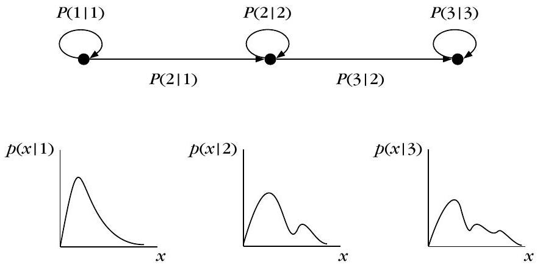
左到右 HMM（圖 9.8）常用於語音辨識：狀態只往較大索引前進或原地停留，$P(i\mid j)=0$ for $i
在 HMM 的正式四元組參數定義 $\mathcal{S} = \{P(i \mid j), p(\boldsymbol{x} \mid i), P(i), K_s\}$ 中，$P(i \mid j)$ 代表什麼意義？
關於左到右（Left-to-Right / Bakis）隱藏馬可夫模型的特性，下列敘述何者正確？
在基於 HMM 的樣板辨識（Recognition）階段，若各參考模型（類別）具有相等的先驗機率，則對未知觀測序列 $X$，貝氏分類器的決策準則為何？
辨識問題（一）：Any Path 法與前向-後向遞迴（α、β、γ）
▼一句話
要判斷一段觀測 $X$ 最像哪一個 HMM 模型 $\mathcal{S}$，其實就是要算出 $p(X\mid\mathcal{S})$；但狀態序列的可能組合太多，直接窮舉不划算。前向變數 $\alpha$ 與後向變數 $\beta$ 讓我們用遞迴的方式，只花 $O(NK_s^2)$ 就能算出答案，而且「每一條可能的路徑都有參與」，所以這個做法叫 any path method。
是什麼：辨識問題的 Bayes 設定
假設我們已經有 $M$ 個訓練好的參考模型，每個模型 $\mathcal{S}$ 由下列參數描述：
$$ \mathcal{S}=\left\{P(i \mid j), p(\boldsymbol{x} \mid i), P(i), K_{s}\right\} $$
對一段未知觀測序列 $X:\boldsymbol{x}_1,\boldsymbol{x}_2,\ldots,\boldsymbol{x}_N$，Bayes 分類器選擇後驗機率最大的模型：
$$ \begin{equation*} \mathcal{S}^{*}=\arg \max _{\mathcal{S}} P(\mathcal{S} \mid X) \tag{9.21} \end{equation*} $$
若各模型的先驗機率相同（equiprobable），這等價於挑 $p(X\mid\mathcal{S})$ 最大的模型：
$$ \begin{equation*} \mathcal{S}^{*}=\arg \max _{\mathcal{S}} p(X \mid \mathcal{S}) \tag{9.22} \end{equation*} $$
為什麼不能直接窮舉：路徑太多
對每個模型而言，能產生這段觀測的狀態轉移路徑 $\Omega_i$ 不只一條，每條各有自己的發生機率 $P(\Omega_i \mid \mathcal{S})$。用機率的全機率公式展開：
$$ \begin{equation*} p(X \mid \mathcal{S})=\sum_{i} p\left(X, \Omega_{i} \mid \mathcal{S}\right)=\sum_{i} p\left(X \mid \Omega_{i}, \mathcal{S}\right) P\left(\Omega_{i} \mid \mathcal{S}\right) \tag{9.23} \end{equation*} $$
式 (9.23) 和 Viterbi 演算法用到的式 (9.6) 長得很像，差別只在一個地方：(9.6) 是找「最大」的那條路徑，(9.23) 是把「所有」路徑的貢獻通通加起來（$\sum_i$）。這個差別，正是 any path 法和之後 kp11 best path 法的分水嶺。
前向變數 α：從頭走到現在的機率
白話理解：$\alpha(i_k)$ 回答的是「走到第 $k$ 階段、目前站在狀態 $i_k$，而且前面 $k$ 個觀測 $\boldsymbol{x}_1,\ldots,\boldsymbol{x}_k$ 都已經照這條路徑發射出來」這件事的機率密度。它只看「過去到現在」，完全不管未來還會發生什麼。
定義與遞迴關係：
$$ \begin{align*} \alpha\left(i_{k+1}\right) & \equiv p\left(\boldsymbol{x}_{1}, \ldots, \boldsymbol{x}_{k+1}, i_{k+1} \mid \mathcal{S}\right) \\ & =\sum_{i_{k}} \alpha\left(i_{k}\right) P\left(i_{k+1} \mid i_{k}\right) p\left(\boldsymbol{x}_{k+1} \mid i_{k+1}\right), \quad k=1,2, \ldots, N-1 \tag{9.24} \end{align*} $$
初始條件：
$$ \alpha\left(i_{1}\right)=P\left(i_{1}\right) p\left(\boldsymbol{x}_{1} \mid i_{1}\right) $$
式中 $P(i_{k+1}\mid i_k)p(\boldsymbol{x}_{k+1}\mid i_{k+1})$ 是「最後這一步」的局部資訊（轉移到 $i_{k+1}$ 又發射出 $\boldsymbol{x}_{k+1}$），而 $\alpha(i_k)$ 則是「走到現在為止累積下來」的歷史資訊，兩者相乘、再對所有可能的前一狀態 $i_k$ 加總，就得到下一步的 $\alpha$。
後向變數 β：從現在走到結尾的機率
白話理解：$\beta(i_k)$ 回答的是「假設現在在第 $k$ 階段、站在狀態 $i_k$，那麼之後 $\boldsymbol{x}_{k+1},\ldots,\boldsymbol{x}_N$ 會照這條路徑被發射出來」的機率密度。它只看「現在到未來」，不管之前是怎麼走到這裡的。
$$ \begin{align*} \beta\left(i_{k}\right) & \equiv p\left(\boldsymbol{x}_{k+1}, \boldsymbol{x}_{k+2}, \ldots, \boldsymbol{x}_{N} \mid i_{k}, \mathcal{S}\right) \\ & =\sum_{i_{k+1}} \beta\left(i_{k+1}\right) P\left(i_{k+1} \mid i_{k}\right) p\left(\boldsymbol{x}_{k+1} \mid i_{k+1}\right), \quad k=N-1, \ldots, 1 \tag{9.25} \end{align*} $$
邊界條件（從最後一站往回算，什麼觀測都還沒發生，機率自然是 1）：
$$ \begin{equation*} \beta\left(i_{N}\right)=1, \quad i_{N} \in\left\{1,2, \ldots, K_{s}\right\} \tag{9.26} \end{equation*} $$
γ：在第 k 階段「正好」站在某狀態的機率
把 $\alpha$（過去）和 $\beta$（未來）乘起來，就能同時掌握「整條觀測序列 $X$ 都發生」而且「第 $k$ 階段正好在狀態 $i_k$」的機率密度：
$$ \begin{align*} \gamma\left(i_{k}\right) & \equiv p\left(\boldsymbol{x}_{1}, \ldots, \boldsymbol{x}_{N}, i_{k} \mid \mathcal{S}\right) \\ & =p\left(\boldsymbol{x}_{1}, \ldots, \boldsymbol{x}_{k}, i_{k} \mid \mathcal{S}\right) p\left(\boldsymbol{x}_{k+1}, \ldots, \boldsymbol{x}_{N} \mid i_{k}, \mathcal{S}\right) \\ & =\alpha\left(i_{k}\right) \beta\left(i_{k}\right) \tag{9.27} \end{align*} $$
這裡用到了觀測彼此獨立的假設，才能把聯合機率拆成 $\alpha$ 乘 $\beta$。式 (9.27) 也順便解釋了為什麼式 (9.26) 要定義 $\beta(i_N)=1$：因為在最後一站，「未來」是空的，空事件的機率當然是 1，這樣 $\gamma(i_N)=\alpha(i_N)\beta(i_N)=\alpha(i_N)$ 才會合理。
最終答案：p(X|S) 與計算量
把式 (9.24) 反覆用到 $k=N$，就能把式 (9.23) 一大堆路徑的總和，直接寫成前向變數在最後一站的加總：
$$ \begin{equation*} p(X \mid \mathcal{S})=\sum_{i_{N}=1}^{K_{s}} \alpha\left(i_{N}\right) \tag{9.28} \end{equation*} $$
要算出式 (9.28)，只需要把每個階段、每個狀態的 $\alpha(i_k)$ 算過一輪（$k=1,\ldots,N$，每階段 $K_s$ 個狀態，每個狀態要對前一階段 $K_s$ 個狀態加總），所以計算量是 $O(NK_s^2)$，遠比窮舉所有路徑便宜。因為這個方法讓「每一條路徑都對最終結果有貢獻」，所以稱為 any path method；把式 (9.28) 對每個模型 $\mathcal{S}$ 各算一次，$p(X\mid\mathcal{S})$ 最大的那個模型就是辨識結果。
怎麼記
- α（前向）：從起點走到現在，「歷史」機率。
- β（後向）：從現在走到終點，「未來」機率。
- γ = α × β：把歷史和未來接在一起，就是「此刻正好在這個狀態」且整段觀測都成立的機率。
- any path：用 $\sum$ 把所有路徑通通算進去，對比 kp11 的 best path 只用 $\max$。
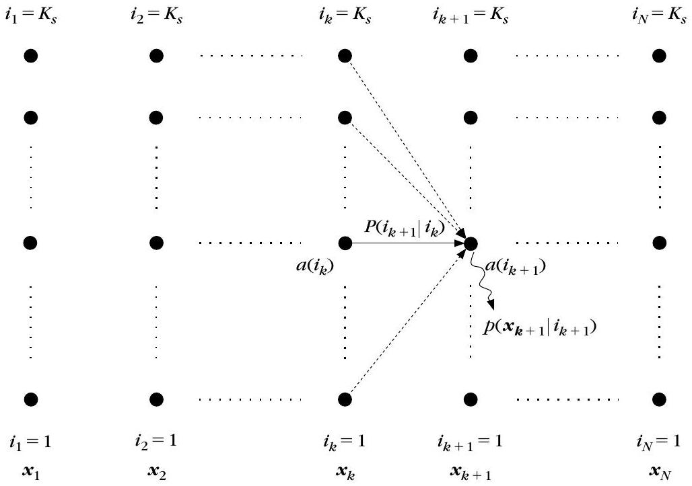
前向變數 $\alpha(i_k)$ 描述的是哪一個事件的機率密度？
式 (9.26) 定義 $\beta(i_N)$ 等於多少，為什麼？
依式 (9.27)，$\gamma(i_k)$ 等於什麼？
用 any path 法（前向遞迴）計算 $p(X\mid\mathcal{S})$ 的計算量大約是多少？
辨識問題（二）：Best Path 法（用 Viterbi 做辨識）
▼一句話
Any path 法（kp10）把「每一條路徑」的貢獻都加起來；best path 法換一個角度：只挑「最可能的那一條路徑」代表整個模型的表現，計算方式從 $\sum$ 換成 $\max$，恰好就是 Viterbi 演算法的拿手活。
是什麼
Best path method 是一種較不精確（suboptimal）但常用的替代做法：對每個參考模型 $\mathcal{S}$，找出能產生觀測 $X$ 的「最可能狀態序列」，把這條最佳路徑的機率當作這個模型的代表分數。這正是本章 Viterbi 演算法處理的任務（如式 9.1），可以套用一樣的動態規劃流程，成本函數如下：
$$ \begin{align*} D & =\sum_{k=1}^{N} d\left(i_{k}, i_{k-1}\right) \tag{9.29}\\ d\left(i_{k}, i_{k-1}\right) & =\ln P\left(i_{k} \mid i_{k-1}\right)+\ln p\left(\boldsymbol{x}_{k} \mid i_{k}\right) \end{align*} $$
為什麼要把 sum 換成 max
換句話說，對每個模型我們要找的是 $P(\Omega_i)p(X\mid\Omega_i)=p(\Omega_i,X)$ 的最大值，而不是像 any path 法一樣把所有 $\Omega_i$ 的貢獻加總。用 kp10 的符號來對照：
- Any path（式 9.23）：$p(X\mid\mathcal{S})=\sum_i p(X,\Omega_i\mid\mathcal{S})$ —— 所有路徑都算，用前向 $\alpha$ 遞迴累加。
- Best path（式 9.29）：只保留 $\max_i p(X,\Omega_i\mid\mathcal{S})$ 那一條，用 Viterbi 遞迴取最大值。
因為只保留一條最佳路徑而不是全部路徑的加權總和，所以嚴格說這個方法是次優（suboptimal）的近似；但計算方式跟 Viterbi 演算法完全共用，實作起來簡單許多，因此很受歡迎。
怎麼用
對每一個參考模型都跑一次 Viterbi，得到各自的最佳累積成本 $D$；未知觀測序列最終被分類到 $D$ 最大的那個參考模型 $\mathcal{S}$。
怎麼記
一句話記憶法：「any path 是全員入座算總分，best path 只請最佳選手代打」。兩者用的局部資訊都一樣（轉移機率乘發射機率），差別只在合併方式是 $\sum$ 還是 $\max$。
① Any Path 法（求和）：用前向遞迴 $\alpha(i_{k+1})=\sum_{i_k}\alpha(i_k)P(i_{k+1}\mid i_k)p(x_{k+1}\mid i_{k+1})$ （式 9.24），把所有 $3^3=27$ 條狀態路徑的機率全部加總，得到 $p(X\mid\mathcal{S})=\sum_{i_N}\alpha(i_N)$（式 9.28）。
② Best Path 法（取最大）：用 Viterbi 遞迴 $D(i_{k+1})=\max_{i_k}[D(i_k)+\ln P(i_{k+1}\mid i_k)+\ln p(x_{k+1}\mid i_{k+1})]$ （式 9.29），只取單一最佳路徑的機率 $P(\Omega^{*},X)=\max_{\Omega} P(\Omega,X)$。
切換上方三種觀測情境並可微調發射機率：當某一條路徑的發射機率遠高於其他路徑（集中型）時， Σ 與 max 會很接近；當各條路徑貢獻相近（分散型）時，Σ 會明顯大於 max。下方圖表左側並排顯示兩個數字與差異， 右側柱狀圖顯示全部 27 條路徑機率（依大小排序），紅色柱為 best path，其餘柱高總和即為 any path 的 Σ。
Best path 法和 kp10 的 any path 法之間，最核心的計算差異是什麼？
式 (9.29) 中的局部成本 $d(i_k,i_{k-1})$ 定義為？
用 best path 法做辨識時，未知觀測會被分類到哪一個參考模型？
訓練（一）：Baum-Welch 重估（離散觀測、EM 的化身）
▼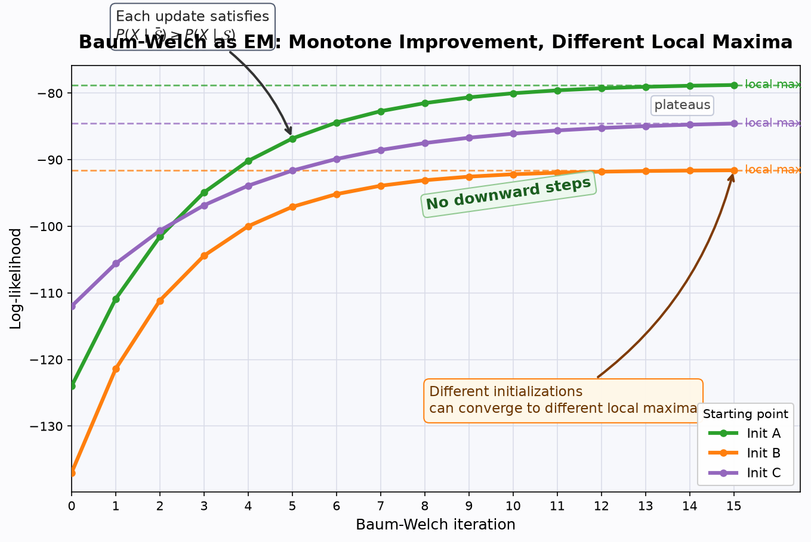
🤖 AI 生圖可用：重繪此示意圖的提示詞（結構化）
WHAT: 製作一張「Baum-Welch 是 EM，log-likelihood 單調不減但會落入不同區域極大值」的教育示意圖。畫面以迭代次數為 x 軸、log-likelihood 為 y 軸，顯示 2 到 3 條由不同初始參數出發的訓練曲線。 WHY: 讓讀者即使遮住文字也能看懂核心因果：每次 EM 更新都把似然往上推，不會往下掉；但初始值不同時，路徑會走向不同的 plateau，因此實務上需要多組初始值重跑。 MUST show: 三條不同顏色的單調上升曲線，最後分別飽和在不同高度；在每條 plateau 畫水平虛線並標出 local max；用箭頭標註每次迭代滿足 P(X|S_bar) >= P(X|S)；另用註解標出 Different initializations -> different local maxima。 AVOID: 不要畫出上下震盪或下降的曲線；不要把三條曲線收斂到同一高度；不要只畫 EM 與 Baum-Welch 的方框關係；不要使用中文圖中文字，公式可用數學符號。
一句話
HMM 的狀態序列是「看不見」的，訓練沒辦法像一般監督式分類那樣直接數資料；Baum-Welch 重估法用目前的模型參數，先估計「每個狀態在每個時間點被經過的機率」，再用這些機率當加權，重新估計模型參數——這整套手法，其實就是第 2 章教過的 EM 演算法。
為什麼訓練比辨識難：狀態看不見
辨識（kp10、kp11）假設模型 $\mathcal{S}$ 的所有參數都已經知道；訓練要做的事恰好相反：只給一段（或一組）已知屬於某模型的觀測資料，反推出 $P(i\mid j)$、$p(\boldsymbol{x}\mid i)$、$P(i)$ 等參數。麻煩的地方在於，我們看得到的只有觀測 $\boldsymbol{x}_k$，看不到當時走的是哪個狀態 $i_k$——狀態序列本身是隱藏（hidden）的，不能直接套用第 9.5 節那種「已知類別標籤」的直接訓練法。
一個自然的想法：既然辨識時我們要讓 $p(X\mid\mathcal{S})$（式 9.28）越大越好，那訓練時就反過來，去找一組參數讓 $p(X\mid\mathcal{S})$ 對已知訓練資料越大越好。這是一個非線性目標函數的最大化問題，得靠疊代方式求解；這裡先討論觀測是離散量化值（$r=1,2,\ldots,L$）時的作法，也就是 Baum-Welch 重估。
兩個核心統計量：ξ 與 γ
要重估參數，需要知道「在目前這組參數 $\mathcal{S}$ 之下，狀態 $i$、$j$ 到底被經過的機率有多少」，這靠兩個量描述：
- $\xi_k(i,j,X\mid\mathcal{S})$：在第 $k$ 階段經過狀態 $i$、下一階段 $k+1$ 經過狀態 $j$，而且模型剛好生成整段觀測 $X$ 的聯合機率。
- $\gamma_k(i\mid X,\mathcal{S})$：在給定模型與整段觀測 $X$ 的條件下，第 $k$ 階段經過狀態 $i$ 的機率。
把 $\xi$ 除以 $P(X\mid\mathcal{S})$ 做歸一化：
$$ \begin{equation*} \xi_{k}(i, j) \equiv \xi_{k}(i, j \mid X, \mathcal{S})=\frac{\xi_{k}(i, j, X \mid \mathcal{S})}{P(X \mid \mathcal{S})} \tag{9.30} \end{equation*} $$
利用 kp10 定義好的 $\alpha$（式 9.24）與 $\beta$（式 9.25），可以把式 (9.30) 具體展開成：
$$ \begin{equation*} \xi_{k}(i, j)=\frac{\alpha\left(i_{k}=i\right) P(j \mid i) P\left(\boldsymbol{x}_{k+1} \mid j\right) \beta\left(i_{k+1}=j\right)}{P(X \mid \mathcal{S})} \tag{9.31} \end{equation*} $$
這條公式的意義很直覺：$\alpha(i_k=i)$ 負責「走到第 $k$ 階段、落在狀態 $i$」的歷史部分；$\beta(i_{k+1}=j)$ 負責「從第 $k+1$ 階段的狀態 $j$ 繼續走到結尾」的未來部分；中間的 $P(j\mid i)P(\boldsymbol{x}_{k+1}\mid j)$ 是「$i\to j$ 這一步轉移加發射」的局部活動；分母 $P(X\mid\mathcal{S})$ 只是做歸一化。
另一個量 $\gamma_k(i)$ 其實跟 kp10 的 $\gamma(i_k)=\alpha(i_k)\beta(i_k)$（式 9.27）是同一件事，只是這裡多除了 $P(X\mid\mathcal{S})$，讓它變成一個「歸一化後」的機率：
$$ \begin{equation*} \gamma_{k}(i) \equiv \gamma_{k}(i \mid X, \mathcal{S})=\frac{\alpha\left(i_{k}=i\right) \beta\left(i_{k}=i\right)}{P(X \mid \mathcal{S})} \tag{9.32} \end{equation*} $$
由這兩個量可以進一步得到很直觀的解讀：
- $\sum_{k=1}^{N} \gamma_k(i)$：在整段觀測期間，狀態 $i$ 被經過的期望次數；若上限改成 $N-1$，則是「從狀態 $i$ 出發的轉移」期望次數。
- $\sum_{k=1}^{N-1} \xi_k(i,j)$：從狀態 $i$ 轉移到狀態 $j$ 的期望次數。
重估公式：把「期望次數」換成「機率」
有了上面的期望次數，重估新模型參數的想法就很自然：轉移機率 $\bar P(j\mid i)$ 就是「從 $i$ 轉到 $j$ 的期望次數」除以「從 $i$ 出發的期望總次數」；發射機率 $\bar P_x(r\mid i)$ 就是「狀態 $i$ 發射出第 $r$ 個離散值的期望次數」除以「狀態 $i$ 出現的期望總次數」；初始機率就直接用第一階段的 $\gamma_1(i)$：
$$ \begin{align*} \bar{P}(j \mid i) & =\frac{\sum_{k=1}^{N-1} \xi_{k}(i, j)}{\sum_{k=1}^{N-1} \gamma_{k}(i)} \tag{9.33}\\ \bar{P}_{\boldsymbol{x}}(r \mid i) & =\frac{\sum_{(k=1 \text{ 且 } \boldsymbol{x}_k \to r)}^{N} \gamma_{k}(i)}{\sum_{k=1}^{N} \gamma_{k}(i)} \tag{9.34}\\ \bar{P}(i) & =\gamma_{1}(i) \tag{9.35} \end{align*} $$
式 (9.34) 的分子，只加總那些「對應的觀測 $\boldsymbol{x}_k$ 剛好被量化成第 $r$ 個離散值」的 $\gamma_k(i)$。
疊代流程
- 初始條件：先假設一組初始參數，算出 $P(X\mid\mathcal{S})$。
- Step 1：用目前模型 $\mathcal{S}$ 的參數，依式 (9.33)–(9.35) 重新估計出新模型 $\overline{\mathcal{S}}$。
- Step 2：計算 $P(X\mid\overline{\mathcal{S}})$。若 $P(X\mid\overline{\mathcal{S}})-P(X\mid\mathcal{S})\gt \epsilon$，就令 $\mathcal{S}=\overline{\mathcal{S}}$ 並回到 Step 1；否則停止。
關鍵洞見：Baum-Welch 就是 EM
Baum-Welch 重估的目標，本質上就是「不完整資料（incomplete data）的最大似然估計」——完整資料應該同時包含觀測 $X$ 與狀態序列，但我們只看得到觀測，看不到狀態，未觀測到的部分正是隱藏狀態序列本身。這跟第 2 章介紹的 EM 演算法框架一模一樣：
- E 步：在目前參數 $\mathcal{S}$ 之下，用 $\alpha$、$\beta$ 算出 $\xi_k(i,j)$、$\gamma_k(i)$，等於是對隱藏狀態序列取期望值。
- M 步：把這些期望值代入式 (9.33)–(9.35)，得到讓期望對數似然最大化的新參數 $\overline{\mathcal{S}}$。
EM 演算法有個保證：每疊代一次，觀測資料的似然值不會變差，這裡就是
$$ P(X \mid \overline{\mathcal{S}}) \geq P(X \mid \mathcal{S}) $$
但這個保證只確保「不會變差」，不保證找到全域最大值——演算法可能停在局部極大值，所以實務上常常會用不同初始條件跑很多次，挑一個結果比較好的局部極大值。
實務注意事項
- Scaling（數值縮放）：$\alpha(i_k)$、$\beta(i_k)$ 都是機率乘積，隨著階段數增加會迅速趨近於 0，容易超出電腦浮點數的精度範圍；常見做法是依階段數比例縮放 $\alpha$，只要 $\beta$ 用同樣的縮放因子，兩者相乘時縮放效應會互相抵銷。
- 初始條件：跟所有疊代最佳化演算法一樣，通常隨機初始化，但要遵守問題本身的限制（例如不允許的轉移機率設為 0，且所有機率要合計為 1）。
- 訓練資料量不足：通常需要相對於狀態數足夠長的觀測序列，才能保證每種轉移都出現足夠多次，讓重估公式學得到合理的參數；資料不足時，需要額外技巧來補強。
怎麼記
口訣：「看不見狀態，就用 α、β 猜；猜出來的期望次數，就當新的機率」。Baum-Welch 是不完整資料下的 EM：E 步用 $\alpha$、$\beta$ 算 $\xi$、$\gamma$，M 步把它們變成重估公式，每疊代一次 $p(X\mid\mathcal{S})$ 只會上升或持平，不會下降。
$\xi_k(i,j)$（式 9.30、9.31）描述的是哪一個事件？
為什麼 Baum-Welch 重估被視為 EM 演算法的一種實現？
關於 Baum-Welch 疊代的收斂性質，下列哪個敘述正確？
式 (9.33) 重估轉移機率 $\bar P(j\mid i)$ 時，分子與分母各是什麼？
訓練（二）：Viterbi 重估（分段 k-means）
▼一句話
如果 Baum-Welch（kp12）是「把所有路徑的貢獻都算進期望值」，Viterbi 重估法就是先用 best path 法（kp11）挑出「一條」最佳狀態路徑，再單純地在這條路徑上數次數，把次數比例當作新的機率估計——這也是語音辨識文獻常說的 segmental k-means 訓練演算法。
核心想法：先挑路徑，再單純數數
Viterbi 重估和 best path 辨識法（kp11）是同一家族的想法：既然辨識時只挑一條最佳路徑當代表，訓練時也可以先用目前的模型參數，找出訓練觀測序列的最佳路徑，然後把這條路徑當成「已知的正確狀態標記」，直接套用第 9.5 節那種「已知類別標籤」的直接統計方式，而不必像 Baum-Welch 一樣，動用 $\alpha$、$\beta$ 去算所有路徑的期望值。
先定義幾個計數量
- $n_{i\mid j}$：從狀態 $j$ 轉移到狀態 $i$ 的次數。
- $n_{\mid j}$：從狀態 $j$ 出發的轉移次數。
- $n_{i\mid}$：終止於狀態 $i$ 的轉移次數。
- $n(r\mid i)$：觀測值 $r\in\{1,2,\ldots,L\}$ 與狀態 $i$ 同時出現的次數。
這些量全部都是「在目前這條最佳路徑上」直接數出來的整數計數，不是機率或期望值。
重估公式：直接算比例
有了計數，重估轉移機率與發射機率就是簡單的相對次數（跟第 9.5 節直接訓練法的精神完全一致）：
$$ \begin{align*} \bar{P}(i \mid j) & =\frac{n_{i \mid j}}{n_{\mid j}}\\ \bar{P}_{\boldsymbol{x}}(r \mid i) & =\frac{n(r \mid i)}{n_{i \mid}} \end{align*} $$
$\bar P_x(r\mid i)$ 就是目前這輪疊代對「狀態 $i$ 發射出 $L$ 個離散值中第 $r$ 個值」的機率估計。
疊代流程
- 初始條件：假設一組初始參數，找出最佳路徑，計算成本 $D$（如式 9.29）。
- Step 1：從目前這條最佳路徑，依上面的計數公式重估新的模型參數。
- Step 2：用新參數重新找最佳路徑，算出新的總成本 $\bar D$。若 $\bar D-D\gt \epsilon$，令 $D=\bar D$ 並回到 Step 1；否則停止。
這裡有一個常見的前提假設：初始狀態是已知的（例如左到右模型，只能往前走的結構），所以不需要另外估計初始機率 $P(i)$。
為什麼叫 segmental k-means
之所以在語音文獻中被稱為 segmental k-means，是因為它的疊代結構跟 k-means 分群演算法很像：先用目前參數把整段觀測「切分（segment）」成各個狀態負責的區段（相當於 k-means 的分派步驟），再用每個區段內的統計量重估參數（相當於 k-means 的更新步驟），一輪一輪交替，直到成本收斂。
和 Baum-Welch 的差異
- Baum-Welch（kp12）：用 $\alpha$、$\beta$ 對「所有路徑」取期望值（soft assignment），對應 any path 法（kp10）。
- Viterbi 重估（本節）：只用「一條」最佳路徑直接數次數（hard assignment），對應 best path 法（kp11）。
Viterbi 重估通常計算比 Baum-Welch 簡單、收斂較快，但因為只保留一條路徑，可能會忽略其他次佳路徑帶來的資訊；文獻證實這個演算法能收斂到觀測資料的合理特徵化結果。
怎麼記
口訣：「best path 負責畫線，畫完線就直接數格子」。Viterbi 重估把訓練簡化成「先分段、再算比例」的兩步交替流程，是 Baum-Welch 的一個計算更輕量的近似版本。
$n_{i\mid j}$ 和 $n_{\mid j}$ 分別代表什麼？
Viterbi 重估演算法為什麼在語音文獻中被稱為 segmental k-means？
Viterbi 重估與 Baum-Welch 重估最主要的差別是什麼？
連續觀測 HMM：用高斯混合模型描述發射機率
▼一句話
離散觀測 HMM（kp12、kp13）要先把連續訊號量化成有限個離散值，這一步量化常常會丟掉重要資訊；連續觀測 HMM 改成直接對 $p(\boldsymbol{x}\mid i)$ 建立參數化模型——最常見的做法就是用高斯混合模型（Gaussian Mixture Model）來描述每個狀態的發射機率密度。
為什麼要跳出離散觀測
離散觀測模型必須先對原本連續的訊號（例如語音片段）做向量量化，把每個觀測壓縮成 $L$ 個離散值中的一個。量化過程往往會嚴重損失原始波形的資訊，進而拖累辨識器的表現。連續觀測模型直接對原始（連續）特徵向量建模，避開量化損失，代價是要先對機率密度函數 $p(\boldsymbol{x}\mid i)$ 做假設，複雜度也隨之提高。辨識階段（kp10、kp11 的公式）完全不受影響，差別只出現在訓練這一端。
是什麼：用混合模型描述 p(x|i)
沿用第 2 章介紹過的混合模型（mixture modeling）想法，把每個狀態 $i$ 的發射密度寫成 $L$ 個成分密度的加權組合：
$$ \begin{equation*} p(\boldsymbol{x} \mid i)=\sum_{m=1}^{L} c_{i m} F\left(\boldsymbol{x}, \boldsymbol{\mu}_{i m}, \Sigma_{i m}\right) \tag{9.36} \end{equation*} $$
其中 $F(\cdot,\cdot,\cdot)$ 是密度函數，這裡採用最常用的高斯函數；$\boldsymbol{\mu}_{im}$、$\Sigma_{im}$ 分別是第 $m$ 個成分（mixture component）的均值向量與共變異數矩陣。混合係數 $c_{im}$ 必須滿足歸一化限制：
$$ \sum_{m=1}^{L} c_{i m}=1, \quad 1 \leq i \leq K_{s} $$
這樣才能保證 $p(\boldsymbol{x}\mid i)$ 對 $\boldsymbol{x}$ 積分等於 1，是一個合法的機率密度。
重估公式：跟離散版本邏輯一致
用跟離散觀測 HMM（式 9.33–9.35）相同的推導精神，可以得到混合模型參數的重估公式：
$$ \begin{gather*} \bar{c}_{i m}=\frac{\sum_{k=1}^{N} \gamma_{k}(i, m)}{\sum_{k=1}^{N} \sum_{r=1}^{L} \gamma_{k}(i, r)} \tag{9.37}\\ \overline{\boldsymbol{\mu}}_{i m}=\frac{\sum_{k=1}^{N} \gamma_{k}(i, m) \boldsymbol{x}_{k}}{\sum_{k=1}^{N} \gamma_{k}(i, m)} \tag{9.38} \end{gather*} $$ $$ \begin{equation*} \bar{\Sigma}_{i m}=\frac{\sum_{k=1}^{N} \gamma_{k}(i, m)\left(\boldsymbol{x}_{k}-\overline{\boldsymbol{\mu}}_{i m}\right)\left(\boldsymbol{x}_{k}-\overline{\boldsymbol{\mu}}_{i m}\right)^{T}}{\sum_{k=1}^{N} \gamma_{k}(i, m)} \tag{9.39} \end{equation*} $$
可以看出這幾個公式的形狀跟一般高斯（或混合高斯）的加權平均、加權共變異數估計一模一樣，只是這裡的權重換成了下面要介紹的 $\gamma_k(i,m)$。
γ_k(i,m)：這次多了一個「哪個成分負責」的機率
$\gamma_k(i,m)$ 是「第 $k$ 階段站在狀態 $i$，而且觀測 $\boldsymbol{x}_k$ 是由第 $m$ 個混合成分負責產生」的機率密度：
$$ \begin{equation*} \gamma_{k}(i, m)=\frac{\alpha\left(i_{k}=i\right) \beta\left(i_{k}=i\right)}{\sum_{i_{k}=1}^{K_{s}} \alpha\left(i_{k}\right) \beta\left(i_{k}\right)} \times \frac{c_{i m} F\left(\boldsymbol{x}_{k}, \boldsymbol{\mu}_{i m}, \Sigma_{i m}\right)}{\sum_{r=1}^{L} c_{i r} F\left(\boldsymbol{x}_{k}, \boldsymbol{\mu}_{i r}, \Sigma_{i r}\right)} \tag{9.40} \end{equation*} $$
式 (9.40) 其實是兩層機率的相乘：前半段就是 kp12 那個歸一化後的 $\gamma_k(i)$（第 $k$ 階段落在狀態 $i$ 的機率），後半段是「在狀態 $i$ 的混合模型裡，第 $m$ 個成分對這個 $\boldsymbol{x}_k$ 的責任比例」（也就是第 2 章 GMM 的 responsibility）。兩者相乘，就同時考慮了「該不該算在狀態 $i$」和「該不該算在成分 $m$」。$c_{im}$ 也因此可以理解成：系統落在狀態 $i$ 時，第 $m$ 個成分被使用的期望次數，佔狀態 $i$ 被使用總期望次數的比例，其他幾個重估公式也有類似的解讀。
Viterbi 版本：只用最佳路徑上的平均
若改用 Viterbi 重估（kp13）的做法，參數估計就改成沿著最佳路徑做平均。以單一高斯（$L=1$，沒有混合）為例：
$$ \begin{align*} \boldsymbol{\mu}_{i} & =\frac{1}{N_{i}} \sum_{k=1}^{N} \boldsymbol{x}_{k} \delta_{i k}\\ \Sigma_{i} & =\frac{1}{N_{i}} \sum_{k=1}^{N}\left(\boldsymbol{x}_{k}-\boldsymbol{\mu}_{i}\right)\left(\boldsymbol{x}_{k}-\boldsymbol{\mu}_{i}\right)^{T} \delta_{i k} \end{align*} $$
這裡 $\delta_{ik}=1$ 表示第 $k$ 階段最佳路徑正好經過狀態 $i$（否則為 0），$N_i$ 是最佳路徑經過狀態 $i$ 的總次數。跟 kp13 一樣，這是硬性分派（只算最佳路徑上的資料），對比式 (9.37)–(9.39) 用 $\gamma_k(i,m)$ 做軟性加權。
tied-mixture：控制參數量的技巧
式 (9.36) 的做法是每個狀態各自擁有一組混合高斯，狀態數一多，需要估計的參數量會變得很大，在訓練資料有限時會影響參數估計的穩健性。所謂 tied-mixture density（共用混合密度）就是讓所有狀態（或某些狀態群組）共用同一組高斯密度成分，只有混合係數 $c_{im}$ 依狀態不同，藉此大幅減少需要估計的獨立參數數量。
和第 2 章 EM 的關聯
跟 kp12 的離散觀測版本一樣，Baum-Welch 演算法在連續觀測（混合模型）情形下依然是 EM 演算法的疊代最大化似然估計，只是 M 步除了重估轉移機率，還要多重估每個狀態、每個混合成分的 $c_{im}$、$\boldsymbol{\mu}_{im}$、$\Sigma_{im}$；E 步則多算出一項「屬於哪個混合成分」的責任度 $\gamma_k(i,m)$。整套邏輯與第 2 章一般 GMM 的 EM 演算法完全呼應，只是多疊了一層「同時要決定屬於哪個狀態」。
怎麼記
- 離散 → 連續：把發射「機率」換成發射「機率密度」的混合高斯模型。
- γ_k(i) → γ_k(i,m)：多了一層「這個觀測該算給哪個高斯成分」的責任度。
- Baum-Welch 版：軟性加權（soft，用 $\gamma_k(i,m)$）；Viterbi 版：硬性分派（hard，用 $\delta_{ik}$）。
- tied-mixture：共用高斯成分，省參數。
為什麼連續觀測 HMM 比離散觀測 HMM 更能避免資訊損失？
式 (9.36) 中的混合係數 $c_{im}$ 必須滿足什麼限制？
$\gamma_k(i,m)$（式 9.40）的意義最貼切的描述是？
tied-mixture（共用混合密度）技巧的主要用意是什麼？
HMM 的狀態持續時間建模與 Segment Modeling
▼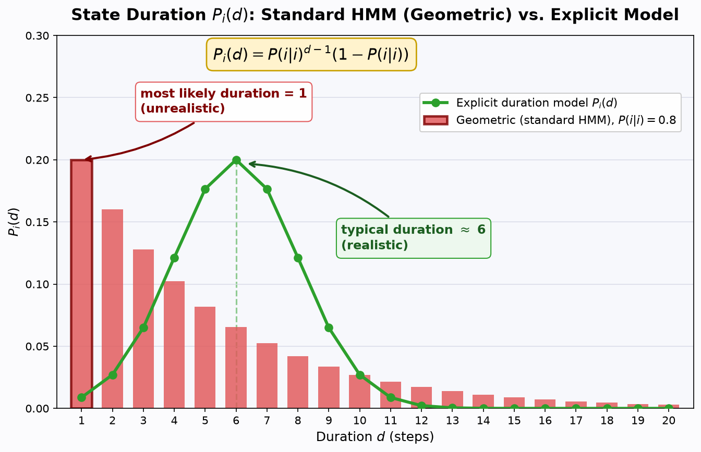
🤖 AI 生圖可用：重繪此示意圖的提示詞（結構化）
WHAT: 製作一張「HMM 狀態停留時間建模」的教育示意圖。x 軸為停留步數 d（1 到 20），y 軸為機率 P_i(d)。畫出兩條分布：(1) 標準 HMM 由自轉移機率 P(i|i)=0.8 隱含的幾何分布 P_i(d)=P(i|i)^(d-1)(1-P(i|i))，單調遞減、峰在 d=1；(2) 顯式停留時間分布，峰在 d≈6 的鐘形曲線（常態或卜瓦松形狀，正規化）。
WHY: 核心反直覺點：標準 HMM 的自轉移機率看似合理，卻隱含「停留 1 步永遠最可能、機率隨 d 單調遞減」，這與真實訊號（語音音素、音訊事件）「先增後減、存在典型持續長度」的事實矛盾，因此必須改用具顯式的 P_i(d)。圖要讓讀者遮住文字也能看懂：一個峰卡在最左邊（d=1），一個峰在中間（d≈6），位置對比本身就是論點。
MUST show: 兩條分布使用不同顏色與標記（幾何型可用長條圖、顯式型可用折線加標記）；在 d=1 的峰用箭頭標註 "most likely duration = 1 (unrealistic)"；在 d≈6 的峰用箭頭標註 "typical duration ≈ 6 (realistic)"；圖上標出公式 P_i(d)=P(i|i)^{d-1}(1-P(i|i))；包含標題、座標軸標籤（Duration d / P_i(d)）、圖例與格線。
AVOID: 不要使用中文圖中文字（避免字型缺字），公式用數學符號；不要畫 3D 圖；不要讓兩條分布顏色相近或峰重疊在同一位置；不要省略公式標註；不要把幾何分布畫成有中段峰值。一句話
標準 HMM 的自轉移機率 $P(i\mid i)$ 其實偷偷假設了「停留時間呈指數衰減」，這對語音等真實訊號常常不貼切；解法是拿掉自轉移、改用顯式的停留時間分布 $P_i(d)$，而 Segment Modeling 更進一步，讓一個狀態一次發射「一整段」觀測。
是什麼：指數型停留時間的陷阱
在標準 HMM 裡，路徑離開目前狀態 $i$ 的機率是 $1-P(i\mid i)$。因此「連續 $d$ 個時刻都停在狀態 $i$」（也就是 $d-1$ 次自轉移、由狀態 $i$ 發射 $d$ 個觀測、然後離開）的機率為
$$P_i(d)=(P(i\mid i))^{d-1}(1-P(i\mid i)) \tag{9.41}$$
這是一個幾何／指數型分布：停留 $1$ 步的機率最大，停得越久機率呈指數衰減。
為什麼：真實訊號不是這樣
對許多音訊訊號（例如語音的音素）而言，每個狀態通常有一段「相對固定的持續時間」；指數分布卻把最大機率放在 $d=1$，明顯不合理，實驗也證實這是標準 HMM 的嚴重缺點。補救方法（Ferguson 提出）是把自轉移機率 $P(i\mid i)$ 從參數集中拿掉，換成顯式的狀態停留機率 $P_i(d)$，並設定最大允許停留長度 $D$。此時模型的參數集變成
$$\mathcal{S}=\left\{P(i\mid j),\; P_i(d),\; p(\boldsymbol{x}\mid i),\; P(i),\; K_s\right\}$$
怎麼算：新的前向遞迴
輔助變數要跟著重新定義：$\alpha_k(i)$ 是「狀態 $i$ 的停留在第 $k$ 級結束，且到第 $k$ 級為止已發射 $\boldsymbol{x}_1,\boldsymbol{x}_2,\ldots,\boldsymbol{x}_k$」的聯合機率密度（式 9.42）。由於停留最多 $D$ 步，到達「$(k,i)$ 結束停留」的方式只有一種型態：從某個 $j\neq i$ 在第 $k-d$ 級結束停留、跳進 $i$、再連停 $d$ 步。於是得到取代原遞迴的式（9.43）：
$$\alpha_k(i)=\sum_{(j=1,\, j\neq i)}^{K_s}\sum_{d=1}^{D}\alpha_{k-d}(j)\,P(i\mid j)\,P_i(d)\prod_{m=k-d+1}^{k}p\left(\boldsymbol{x}_m\mid i\right) \tag{9.43}$$
初始化為 $\alpha_1(j)=P(j)P_j(1)p(\boldsymbol{x}_1\mid j)$，而辨識所需的量由式（9.44）給出：
$$p(X\mid \mathcal{S})=\sum_{i=1}^{K_s}\alpha_N(i) \tag{9.44}$$
訓練端則要再定義 $\alpha_k^{*}(i)$（狀態 $i$ 在第 $k+1$ 級「開始」停留）、$\beta_k(i)$ 與 $\beta_k^{*}(i)$ 等輔助變數，並據此導出重估公式（9.51）–（9.54）。例如 $\bar{P}_i(d)$ 的直觀意義就是「路徑以停留長度 $d$ 進入狀態 $i$ 的次數」除以「狀態 $i$ 以任何停留長度出現的總次數」。
代價與補救
- 計算量增加約 $D^2$ 倍、儲存需求增加約 $D$ 倍：遞迴中多了一層對 $d$ 的求和。
- 每個狀態多出 $D$ 個參數要估計：勢必需要更長的訓練序列，才能保證參數估計夠準。
- 補救之道：對 $P_i(d)$ 改用參數化分布（Gaussian、Poisson、Gamma 都被用過），未知參數數量就降為該分布本身的參數個數。
Best Path 版本（Viterbi 的改造）
若辨識時只要「最可能的一條狀態路徑」，§9.4 的 Viterbi 演算法不再適用，要改成對兩類競爭路徑取最大：令 $a_k(i)$ 為到第 $k$ 級、狀態 $i$ 的最佳代價，則（式 9.57、9.58）
$$a_k(i)=\max_{1\leq d\leq D,\; 1\leq j\leq K_s,\; j\neq i}\left[\delta_k(j,d,i)\right],\qquad \delta_k(j,d,i)=a_{k-d}(j)\,P(i\mid j)\,P_i(d)\prod_{m=k-d+1}^{k}p\left(\boldsymbol{x}_m\mid i\right)$$
也就是說，最佳路徑可以「從 $j$ 跳進 $i$ 只停 1 步」，也可以「跳進 $i$ 連停 $d=2,\ldots,D$ 步」。此版本的重估公式退化成沿最佳路徑「數次數」的計數式，例如 $\bar{P}_i(d)$ 就是「狀態 $i$ 連續發射 $d$ 個觀測的次數」除以「停留在狀態 $i$ 的總時間」。
Segment Modeling：一次發射一整段
HMM 還有兩個老毛病：給定狀態序列後觀測彼此獨立的假設太強、停留時間建模太弱。Segment Modeling（段落建模）把它們一併處理：
- HMM：到達一個狀態就發射單一觀測（一個 frame），基本分布在 frame 層級，即 $p(\boldsymbol{x}\mid i)$。
- Segment Model：到達一個狀態時發射一整段 $d$ 個 frame 的段落 $X_r^d=\left[\boldsymbol{x}_r,\ldots,\boldsymbol{x}_{r+d-1}\right]$，且 $d$ 本身是隨機變數；基本分布升到段落層級 $p\left(X_r^d\mid i,d\right)$。
其參數包括：狀態數、轉移建模參數、給定 $d$ 時段落的聯合機率密度、以及停留機率 $P(d\mid i)$；訓練則是 Baum-Welch 與 Viterbi 架構的推廣。原文圖 9.10 對照了兩種發射方式，值得一看。
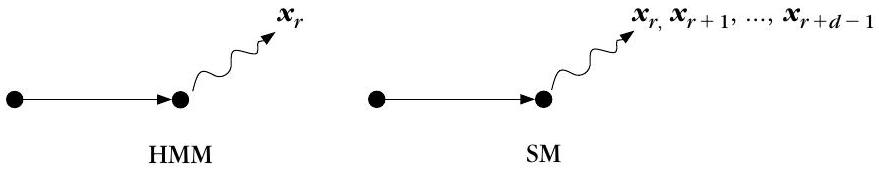
標準 HMM 用自轉移 $P(i\mid i)=p$ 隱含狀態停留分布 $P_i(d)=p^{d-1}(1-p)$（式 9.41），是單調指數衰減、峰在 $d=1$，平均停留 $\bar d=1/(1-p)$。對許多應用（如語音）這並不恰當，故可改用顯式 $P_i(d)$（如峰在 $d^*$ 的離散分布）作為參數，以更貼合真實狀態持續時間。
標準 HMM 中，自轉移機率 $P(i\mid i)$ 隱含了怎樣的狀態停留時間分布 $P_i(d)$？
在顯式狀態停留時間建模中，前向輔助變數 $\alpha_k(i)$ 的定義與標準 HMM 有何關鍵差異？
採用顯式 $P_i(d)$ 取代自轉移機率後，系統付出的主要代價是什麼？
Segment Modeling 與標準 HMM 在「觀測發射」上的根本差異是什麼？
用神經網路訓練馬可夫模型
▼一句話
把 HMM 的「狀態」看成「類別」，用多層感知機（MLP）逼近事後機率 $P(i\mid \boldsymbol{x})$，再用貝氏規則轉回辨識所需的發射密度 $p(\boldsymbol{x}\mid i)$——神經網路就這樣接手了馬可夫模型的機率學習。
是什麼：關鍵橋樑
HMM 辨識系統的訓練階段，全部工作就是學出各種機率（與密度）。第 3 章已證明過一件關鍵的事：以最小平方等準則最佳化的監督式分類器，其輸出可以逼近事後類別機率。這正是本節的出發點：
- 把每個狀態 $i$ 視為一個類別；
- MLP 的輸入是觀測向量 $\boldsymbol{x}$，輸出節點數等於狀態數；
- 以 backpropagation 訓練，目標輸出為：真實狀態對應的節點給 1、其餘給 0（見第 4 章）；
- 訓練完成後，網路輸出即充分近似 $P(i\mid \boldsymbol{x})$。
怎麼用：貝氏轉換
馬可夫模型辨識階段需要的是發射密度 $p(\boldsymbol{x}\mid i)$，而網路給的是 $P(i\mid \boldsymbol{x})$，兩者由貝氏規則銜接：
$$p(\boldsymbol{x}\mid i)=\frac{P(i\mid \boldsymbol{x})\,p(\boldsymbol{x})}{P(i)}$$
其中狀態先驗 $P(i)$ 由各狀態的相對出現頻率估計；$p(\boldsymbol{x})$ 在辨識時對所有狀態都是同一個常數，不影響狀態間的比較。
為什麼：神經網路帶來的兩個禮物
- 擺脫觀測獨立假設：標準 HMM 假設給定狀態後觀測彼此獨立，這在真實訊號中多半不成立。MLP 可以直接吃「上下文輸入（contextual input）」：當前向量 $\boldsymbol{x}_k$ 加上前 $p$ 個、後 $p$ 個觀測一起送進輸入層，輸入節點共 $(2p+1)l$ 個（$l$ 為觀測向量維度），統計相依性自然被網路學進去。
- 可再納入狀態相依：把前一個狀態 $i_{k-1}$ 的資訊也餵進輸入（辨識時以輸出回饋方式提供，即原文圖 9.11 的虛線），網路輸出就變成條件機率 $P\left(i_k\mid X_{k-p}^{k+p}, i_{k-1}\right)$，其中 $X_{k-p}^{k+p}$ 代表從 $\boldsymbol{x}_{k-p}$ 到 $\boldsymbol{x}_{k+p}$ 的上下文。
有了這些機率，回到最初目標：把狀態當類別，由鏈式法則展開 $P(\Omega_i\mid X)$（式 9.59），再利用狀態相依的馬可夫性質、並稍微放寬對觀測的條件限制，可得（式 9.60）
$$P\left(\Omega_i\mid X\right)=\prod_k P\left(i_k\mid X_{k-p}^{k+p}, i_{k-1}\right) \tag{9.60}$$
其最大化可用動態規劃輕鬆完成。
代價與限制
- 訓練時狀態必須可觀測：這個方法假設訓練時知道每個觀測來自哪個狀態（例如語音辨識中把每個音素對應到一個狀態），因此需要精確的訊號分段，而語音邊界常常並不明確。HMM 的優勢正是把狀態邊界交給演算法自動決定。
- 網路要夠大：要有良好的機率逼近能力，MLP 規模必須足夠；加入上下文輸入又進一步放大網路，訓練所需計算資源可觀。
- 理論限制：「網路輸出等於機率」這件事，理論上只在代價函數的全域最小值成立，實務上未必達得到。
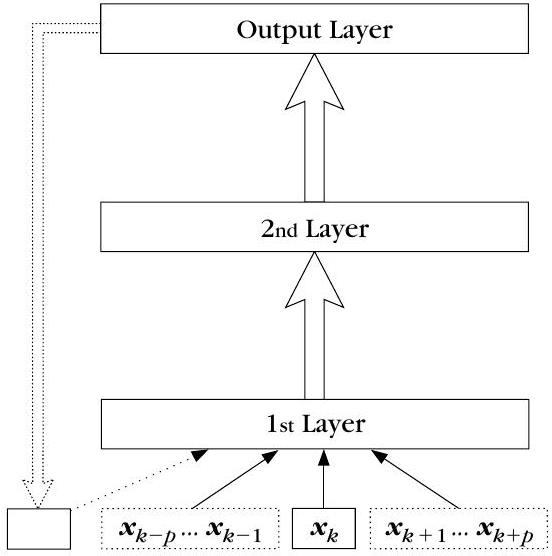
為什麼可以用多層感知機（MLP）的輸出來逼近事後機率 $P(i\mid \boldsymbol{x})$？
MLP 訓練好之後輸出 $P(i\mid \boldsymbol{x})$，但馬可夫模型辨識階段需要的是 $p(\boldsymbol{x}\mid i)$。該如何轉換？
相較於標準 HMM 的訓練，「用 MLP 訓練馬可夫模型」的一個主要缺點是什麼？
若觀測向量維度為 $l$，採用「前 $p$ 個＋當前＋後 $p$ 個」的上下文輸入（contextual input），MLP 的輸入節點數為多少？
馬可夫隨機場（MRF）與 Gibbs 分布
▼一句話
把情境相關分類從一維序列推廣到二維影像時，「前後順序」不復存在，於是改用「鄰域相依」的馬可夫隨機場（MRF）；Hammersley-Clifford 定理保證 MRF 與 Gibbs 分布等價，讓我們能用 clique 上的能量函數 $U(\Omega)$ 寫出全域機率，再用模擬退火找出最佳標記組態。
是什麼：二維的情境相依
觀測變成二維陣列 $X(i,j)$（例如影像像素的灰階值），對應的類別／狀態陣列為 $\Omega:\omega_{ij}$，每個 $\omega_{ij}$ 可取 $M$ 個值之一。目標不變：給定觀測陣列，估計狀態陣列使
$$p(X\mid \Omega)\,P(\Omega) \text{ 最大} \tag{9.61}$$
關鍵假設：$\Omega$ 的元素彼此相依，但相依範圍只限於一個鄰域之內——這就把我們帶到第 7 章定義過的馬可夫隨機場。
鄰域與 Markov 性質
對陣列中每個 $(i,j)$ 元素定義鄰域 $\mathcal{N}_{ij}$，滿足兩條規則：
- $\omega_{ij}\notin \mathcal{N}_{ij}$：自己不是自己的鄰居；
- $\omega_{ij}\in \mathcal{N}_{kl} \Longleftrightarrow \omega_{kl}\in \mathcal{N}_{ij}$：鄰居關係是對稱的。
Markov 性質（式 9.62）則說：
$$P\left(\omega_{ij}\mid \bar{\Omega}_{ij}\right)=P\left(\omega_{ij}\mid \mathcal{N}_{ij}\right) \tag{9.62}$$
其中 $\bar{\Omega}_{ij}$ 是 $\Omega$ 中除 $(i,j)$ 以外的所有元素。白話講：給定鄰居之後，這個像素的狀態就與影像中其他所有像素條件獨立。這是一維情形（式 9.3）的推廣；原文圖 9.12 給了一個八鄰域的典型例子。
為什麼：一維的順序性推廣不了
一維序列有天然的「前 $\to$ 後」順序，所以能導出漂亮的遞迴關係，讓計算上優雅的動態規劃大顯身手；但二維平面沒有自然的全序關係，這套技巧無法自然推廣。這正是 MRF 必須引入新工具（Gibbs 分布＋模擬退火）的根本原因。
Hammersley-Clifford 定理與 Gibbs 分布
Geman 與 Geman（1984）那篇影響深遠的論文，把 Hammersley-Clifford 定理引入影像處理與分析：MRF 與 Gibbs 分布彼此等價，因此我們可以直接談「Gibbs 隨機場」。Gibbs 條件機率的形式為（式 9.63）
$$P\left(\omega_{ij}\mid \mathcal{N}_{ij}\right)=\frac{1}{Z}\exp\left(-\frac{1}{T}\sum_k F_k\left(\mathcal{C}_k(i,j)\right)\right) \tag{9.63}$$
- $Z$：讓機率加總為 1 的正規化常數；$T$：溫度參數；
- $F_k(\cdot)$：定義在 clique $\mathcal{C}_k(i,j)$ 上的函數；
- clique（團）：單一像素，或一組（相對於所選鄰域型態）互為鄰居的像素集合。原文圖 9.13 展示了兩種鄰域及其對應的 clique 集合。
以四鄰域為例，式 9.63 指數部分的一個典型函數是
$$-\frac{1}{T}\,\omega_{ij}\left(\alpha_1+\alpha_2\left(\omega_{i-1,j}+\omega_{i+1,j}\right)+\alpha_2\left(\omega_{i,j-1}+\omega_{i,j+1}\right)\right)$$
其中 $\alpha_i$ 為常數。
全域聯合機率與能量函數
Gibbs 模型的聯合機率為（式 9.64、9.65）
$$P(\Omega)=\exp\left(-\frac{U(\Omega)}{T}\right) \tag{9.64}$$ $$U(\Omega)=\sum_{i,j}\sum_k F_k\left(\mathcal{C}_k(i,j)\right) \tag{9.65}$$
也就是說，$U(\Omega)$ 是與鄰域相關的所有可能 clique 上函數值的總和，扮演「能量」的角色：能量越低，該組態的機率越高。許多情況下（例如影像區域本身由二維高斯 AR 這類馬可夫過程生成），要最大化的後驗機率 $P(\Omega\mid X)$ 恰好也是 Gibbsian，此時便可採用模擬退火（simulated annealing）技巧取得所需的最大值。
怎麼記
口訣：「一維靠順序、二維靠鄰居；MRF 給局部性質、Gibbs 給全域機率；能量越低越可能，退火幫你找最大。」
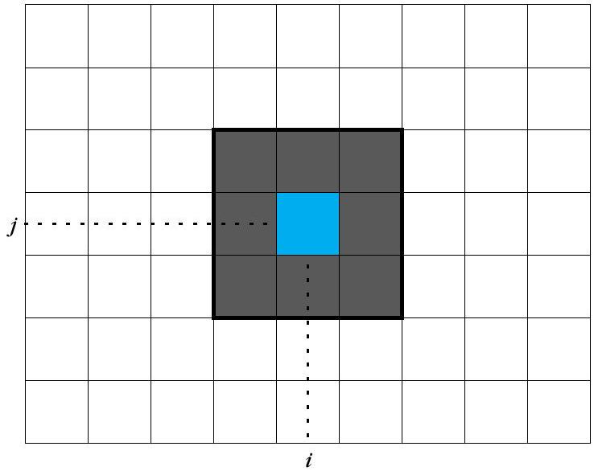
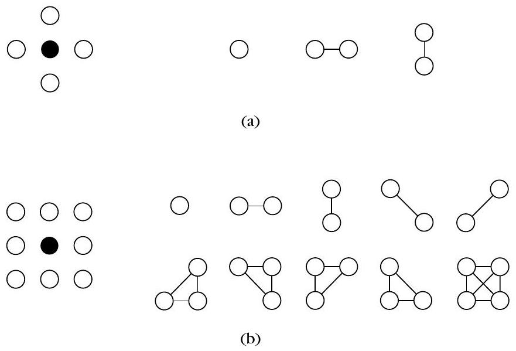
MRF 的 Markov 性質 $P(\omega_{ij}\mid \bar{\Omega}_{ij})=P(\omega_{ij}\mid \mathcal{N}_{ij})$ 的白話意思是什麼？
Hammersley-Clifford 定理在 MRF 建模中扮演的角色是什麼？
在 Gibbs 分布中，「clique（團）」的定義是什麼？
為什麼一維情境分類的動態規劃技巧難以直接推廣到二維影像？